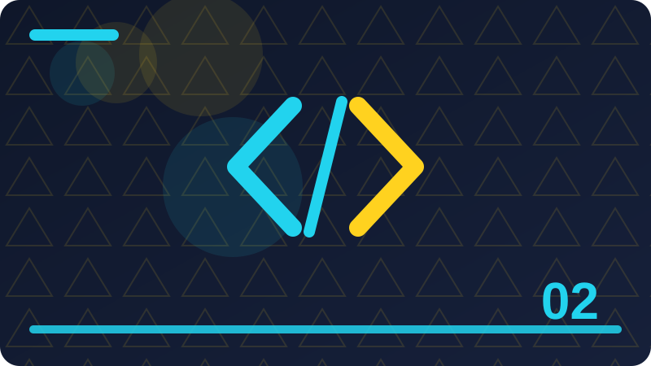

Chapter 2: Variables, Mutability and Types

Section 1: What a Variable Really Is
Beginners often rush past what a variable really is, yet a few minutes spent on the details here will save you much longer debugging sessions later. When you work with what a variable really is, try to state the goal in one plain sentence before you write any code at all. A clear mental picture of what a variable really is helps you choose the simplest code that still does the job correctly. In Rust, what a variable really is is not a trick to memorise; it is a practical tool that makes your intentions visible to the compiler and to other readers. You will notice that what a variable really is appears in many ordinary programs, from tiny practice exercises to larger tools you may build later. The examples in this section use short, readable code so that you can focus on what a variable really is rather than on unfamiliar syntax. As you read about what a variable really is, keep asking yourself what the program should do, what data it needs, and what result you expect.
Good Rust code about what a variable really is usually reads almost like a description of the problem, with each step named clearly. One useful habit is to test what a variable really is with a simple value first, confirm the result, and only then try a harder case. If an example involving what a variable really is surprises you, treat that surprise as useful information rather than as a failure. The compiler is your partner when you practise what a variable really is, because its messages often point directly to the line that needs attention. Learning what a variable really is well means learning both what to write and what to avoid, and this section covers both sides. Think of what a variable really is as one building block: on its own it is small, but combined with other blocks it can support a complete program. Many learners understand what a variable really is faster when they change one small part of an example and observe exactly what changes in the output.
When you explain what a variable really is to another learner in your own words, gaps in your understanding tend to show up quickly and honestly. Rust programs that use what a variable really is well tend to be easier to read, easier to test, and easier to change months later. A practical way to study what a variable really is is to write the example yourself instead of copying it, because typing forces you to notice every detail. Notice how what a variable really is fits with the ideas from earlier sections: each new idea builds on the last, rather than replacing it. The goal of this section is not speed but understanding, so take time to follow how what a variable really is works step by step. When you meet what a variable really is in a larger program, break the surrounding code into small pieces and identify the part that does this job.
fn main() {
let mut score = 10;
score = 11;
println!("Score: {}", score);
}Check: In your own words, explain what a variable really is and give one short example of when you would use it.
Section 2: Declaring Variables with let
In Rust, declaring variables with let is not a trick to memorise; it is a practical tool that makes your intentions visible to the compiler and to other readers. You will notice that declaring variables with let appears in many ordinary programs, from tiny practice exercises to larger tools you may build later. The examples in this section use short, readable code so that you can focus on declaring variables with let rather than on unfamiliar syntax. As you read about declaring variables with let, keep asking yourself what the program should do, what data it needs, and what result you expect. Good Rust code about declaring variables with let usually reads almost like a description of the problem, with each step named clearly. One useful habit is to test declaring variables with let with a simple value first, confirm the result, and only then try a harder case. If an example involving declaring variables with let surprises you, treat that surprise as useful information rather than as a failure.
The compiler is your partner when you practise declaring variables with let, because its messages often point directly to the line that needs attention. Learning declaring variables with let well means learning both what to write and what to avoid, and this section covers both sides. Think of declaring variables with let as one building block: on its own it is small, but combined with other blocks it can support a complete program. Many learners understand declaring variables with let faster when they change one small part of an example and observe exactly what changes in the output. When you explain declaring variables with let to another learner in your own words, gaps in your understanding tend to show up quickly and honestly. Rust programs that use declaring variables with let well tend to be easier to read, easier to test, and easier to change months later. A practical way to study declaring variables with let is to write the example yourself instead of copying it, because typing forces you to notice every detail.
Notice how declaring variables with let fits with the ideas from earlier sections: each new idea builds on the last, rather than replacing it. The goal of this section is not speed but understanding, so take time to follow how declaring variables with let works step by step. When you meet declaring variables with let in a larger program, break the surrounding code into small pieces and identify the part that does this job. Clear naming makes declaring variables with let much easier to follow, so choose names that say what a value means rather than how it is stored. Errors involving declaring variables with let are common for beginners, and they are also among the easiest to fix once you read the message carefully. Try to predict the output before you run any example about declaring variables with let, then compare your prediction with the actual result. A short experiment with declaring variables with let is worth more than a long passage of notes, so keep a practice project open while you read.
fn main() {
let title: &str = "Rust";
println!("Title: {}", title);
}Check: What problem does declaring variables with let solve, and what would go wrong if you ignored it in a small program?
Section 3: Reading a Variable's Value
As you read about reading a variable's value, keep asking yourself what the program should do, what data it needs, and what result you expect. Good Rust code about reading a variable's value usually reads almost like a description of the problem, with each step named clearly. One useful habit is to test reading a variable's value with a simple value first, confirm the result, and only then try a harder case. If an example involving reading a variable's value surprises you, treat that surprise as useful information rather than as a failure. The compiler is your partner when you practise reading a variable's value, because its messages often point directly to the line that needs attention. Learning reading a variable's value well means learning both what to write and what to avoid, and this section covers both sides. Think of reading a variable's value as one building block: on its own it is small, but combined with other blocks it can support a complete program.
Many learners understand reading a variable's value faster when they change one small part of an example and observe exactly what changes in the output. When you explain reading a variable's value to another learner in your own words, gaps in your understanding tend to show up quickly and honestly. Rust programs that use reading a variable's value well tend to be easier to read, easier to test, and easier to change months later. A practical way to study reading a variable's value is to write the example yourself instead of copying it, because typing forces you to notice every detail. Notice how reading a variable's value fits with the ideas from earlier sections: each new idea builds on the last, rather than replacing it. The goal of this section is not speed but understanding, so take time to follow how reading a variable's value works step by step. When you meet reading a variable's value in a larger program, break the surrounding code into small pieces and identify the part that does this job.
Clear naming makes reading a variable's value much easier to follow, so choose names that say what a value means rather than how it is stored. Errors involving reading a variable's value are common for beginners, and they are also among the easiest to fix once you read the message carefully. Try to predict the output before you run any example about reading a variable's value, then compare your prediction with the actual result. A short experiment with reading a variable's value is worth more than a long passage of notes, so keep a practice project open while you read. Rust values explicitness, and reading a variable's value shows that value: the code says what it means instead of leaving important details hidden. As your programs grow, reading a variable's value will keep appearing in new combinations, so a solid foundation here pays off repeatedly. One sign that you understand reading a variable's value is that you can recognise when it is the right tool and when a different approach would be simpler.
fn main() {
let pi: f64 = 3.14159;
println!("Pi: {}", pi);
}Check: Write a tiny Rust example that shows reading a variable's value clearly, then describe what each line does.
Section 4: Mutability with mut
If an example involving mutability with mut surprises you, treat that surprise as useful information rather than as a failure. The compiler is your partner when you practise mutability with mut, because its messages often point directly to the line that needs attention. Learning mutability with mut well means learning both what to write and what to avoid, and this section covers both sides. Think of mutability with mut as one building block: on its own it is small, but combined with other blocks it can support a complete program. Many learners understand mutability with mut faster when they change one small part of an example and observe exactly what changes in the output. When you explain mutability with mut to another learner in your own words, gaps in your understanding tend to show up quickly and honestly. Rust programs that use mutability with mut well tend to be easier to read, easier to test, and easier to change months later.
A practical way to study mutability with mut is to write the example yourself instead of copying it, because typing forces you to notice every detail. Notice how mutability with mut fits with the ideas from earlier sections: each new idea builds on the last, rather than replacing it. The goal of this section is not speed but understanding, so take time to follow how mutability with mut works step by step. When you meet mutability with mut in a larger program, break the surrounding code into small pieces and identify the part that does this job. Clear naming makes mutability with mut much easier to follow, so choose names that say what a value means rather than how it is stored. Errors involving mutability with mut are common for beginners, and they are also among the easiest to fix once you read the message carefully. Try to predict the output before you run any example about mutability with mut, then compare your prediction with the actual result.
A short experiment with mutability with mut is worth more than a long passage of notes, so keep a practice project open while you read. Rust values explicitness, and mutability with mut shows that value: the code says what it means instead of leaving important details hidden. As your programs grow, mutability with mut will keep appearing in new combinations, so a solid foundation here pays off repeatedly. One sign that you understand mutability with mut is that you can recognise when it is the right tool and when a different approach would be simpler. The discussion of mutability with mut in this section avoids jargon where possible, and every new term is introduced through an example first. When you review this section later, focus on mutability with mut by asking what problem it solves and what would go wrong without it. Small, careful steps are the fastest route to mastering mutability with mut, even if they feel slow on the first pass.
fn main() {
let ready = true;
println!("Ready: {}", ready);
}Check: How would you test that you understand mutability with mut, and what result would prove your code works?
Section 5: Why Immutability Is the Default
Think of why immutability is the default as one building block: on its own it is small, but combined with other blocks it can support a complete program. Many learners understand why immutability is the default faster when they change one small part of an example and observe exactly what changes in the output. When you explain why immutability is the default to another learner in your own words, gaps in your understanding tend to show up quickly and honestly. Rust programs that use why immutability is the default well tend to be easier to read, easier to test, and easier to change months later. A practical way to study why immutability is the default is to write the example yourself instead of copying it, because typing forces you to notice every detail. Notice how why immutability is the default fits with the ideas from earlier sections: each new idea builds on the last, rather than replacing it. The goal of this section is not speed but understanding, so take time to follow how why immutability is the default works step by step.
When you meet why immutability is the default in a larger program, break the surrounding code into small pieces and identify the part that does this job. Clear naming makes why immutability is the default much easier to follow, so choose names that say what a value means rather than how it is stored. Errors involving why immutability is the default are common for beginners, and they are also among the easiest to fix once you read the message carefully. Try to predict the output before you run any example about why immutability is the default, then compare your prediction with the actual result. A short experiment with why immutability is the default is worth more than a long passage of notes, so keep a practice project open while you read. Rust values explicitness, and why immutability is the default shows that value: the code says what it means instead of leaving important details hidden. As your programs grow, why immutability is the default will keep appearing in new combinations, so a solid foundation here pays off repeatedly.
One sign that you understand why immutability is the default is that you can recognise when it is the right tool and when a different approach would be simpler. The discussion of why immutability is the default in this section avoids jargon where possible, and every new term is introduced through an example first. When you review this section later, focus on why immutability is the default by asking what problem it solves and what would go wrong without it. Small, careful steps are the fastest route to mastering why immutability is the default, even if they feel slow on the first pass. You do not need to memorise every detail of why immutability is the default today; you need a working understanding that you can return to and deepen. Practice with why immutability is the default in several tiny programs, because the same idea can look different in different contexts.
fn main() {
let first = 5;
let second = first + 2;
println!("Second: {}", second);
}Check: When is why immutability is the default the right choice, and when would a simpler approach be better?
Section 6: Changing a Value Step by Step
Rust programs that use changing a value step by step well tend to be easier to read, easier to test, and easier to change months later. A practical way to study changing a value step by step is to write the example yourself instead of copying it, because typing forces you to notice every detail. Notice how changing a value step by step fits with the ideas from earlier sections: each new idea builds on the last, rather than replacing it. The goal of this section is not speed but understanding, so take time to follow how changing a value step by step works step by step. When you meet changing a value step by step in a larger program, break the surrounding code into small pieces and identify the part that does this job. Clear naming makes changing a value step by step much easier to follow, so choose names that say what a value means rather than how it is stored. Errors involving changing a value step by step are common for beginners, and they are also among the easiest to fix once you read the message carefully.
Try to predict the output before you run any example about changing a value step by step, then compare your prediction with the actual result. A short experiment with changing a value step by step is worth more than a long passage of notes, so keep a practice project open while you read. Rust values explicitness, and changing a value step by step shows that value: the code says what it means instead of leaving important details hidden. As your programs grow, changing a value step by step will keep appearing in new combinations, so a solid foundation here pays off repeatedly. One sign that you understand changing a value step by step is that you can recognise when it is the right tool and when a different approach would be simpler. The discussion of changing a value step by step in this section avoids jargon where possible, and every new term is introduced through an example first. When you review this section later, focus on changing a value step by step by asking what problem it solves and what would go wrong without it.
Small, careful steps are the fastest route to mastering changing a value step by step, even if they feel slow on the first pass. You do not need to memorise every detail of changing a value step by step today; you need a working understanding that you can return to and deepen. Practice with changing a value step by step in several tiny programs, because the same idea can look different in different contexts. A helpful question to carry through this section is simple: what does changing a value step by step change about the data, the control flow, or the result? Rust documentation and compiler hints can deepen your grasp of changing a value step by step, so use them as a second teacher after you try the example.
fn main() {
let count = 3;
println!("Count: {}", count);
}Check: In your own words, explain changing a value step by step and give one short example of when you would use it.
Section 7: Shadowing in Plain Words
The goal of this section is not speed but understanding, so take time to follow how shadowing in plain words works step by step. When you meet shadowing in plain words in a larger program, break the surrounding code into small pieces and identify the part that does this job. Clear naming makes shadowing in plain words much easier to follow, so choose names that say what a value means rather than how it is stored. Errors involving shadowing in plain words are common for beginners, and they are also among the easiest to fix once you read the message carefully. Try to predict the output before you run any example about shadowing in plain words, then compare your prediction with the actual result. A short experiment with shadowing in plain words is worth more than a long passage of notes, so keep a practice project open while you read. Rust values explicitness, and shadowing in plain words shows that value: the code says what it means instead of leaving important details hidden.
As your programs grow, shadowing in plain words will keep appearing in new combinations, so a solid foundation here pays off repeatedly. One sign that you understand shadowing in plain words is that you can recognise when it is the right tool and when a different approach would be simpler. The discussion of shadowing in plain words in this section avoids jargon where possible, and every new term is introduced through an example first. When you review this section later, focus on shadowing in plain words by asking what problem it solves and what would go wrong without it. Small, careful steps are the fastest route to mastering shadowing in plain words, even if they feel slow on the first pass. You do not need to memorise every detail of shadowing in plain words today; you need a working understanding that you can return to and deepen. Practice with shadowing in plain words in several tiny programs, because the same idea can look different in different contexts.
A helpful question to carry through this section is simple: what does shadowing in plain words change about the data, the control flow, or the result? Rust documentation and compiler hints can deepen your grasp of shadowing in plain words, so use them as a second teacher after you try the example. When code involving shadowing in plain words does not work, reduce it to the smallest version that still shows the problem before you search for help. The examples here deliberately stay small so that shadowing in plain words remains the focus and nothing else distracts from the lesson. Understanding shadowing in plain words also helps you read other people's Rust code, because you will recognise the pattern even when the names differ. Take a moment to connect shadowing in plain words with a task you care about, such as a calculator, a list manager, or a simple game. In professional Rust work, shadowing in plain words is used with the same care shown here: clear intent, small steps, and a quick check of the result.
fn main() {
let mut score = 10;
score = 11;
println!("Score: {}", score);
}Check: What problem does shadowing in plain words solve, and what would go wrong if you ignored it in a small program?
Section 8: Shadowing Versus Mutation
Errors involving shadowing versus mutation are common for beginners, and they are also among the easiest to fix once you read the message carefully. Try to predict the output before you run any example about shadowing versus mutation, then compare your prediction with the actual result. A short experiment with shadowing versus mutation is worth more than a long passage of notes, so keep a practice project open while you read. Rust values explicitness, and shadowing versus mutation shows that value: the code says what it means instead of leaving important details hidden. As your programs grow, shadowing versus mutation will keep appearing in new combinations, so a solid foundation here pays off repeatedly. One sign that you understand shadowing versus mutation is that you can recognise when it is the right tool and when a different approach would be simpler. The discussion of shadowing versus mutation in this section avoids jargon where possible, and every new term is introduced through an example first.
When you review this section later, focus on shadowing versus mutation by asking what problem it solves and what would go wrong without it. Small, careful steps are the fastest route to mastering shadowing versus mutation, even if they feel slow on the first pass. You do not need to memorise every detail of shadowing versus mutation today; you need a working understanding that you can return to and deepen. Practice with shadowing versus mutation in several tiny programs, because the same idea can look different in different contexts. A helpful question to carry through this section is simple: what does shadowing versus mutation change about the data, the control flow, or the result? Rust documentation and compiler hints can deepen your grasp of shadowing versus mutation, so use them as a second teacher after you try the example. When code involving shadowing versus mutation does not work, reduce it to the smallest version that still shows the problem before you search for help.
The examples here deliberately stay small so that shadowing versus mutation remains the focus and nothing else distracts from the lesson. Understanding shadowing versus mutation also helps you read other people's Rust code, because you will recognise the pattern even when the names differ. Take a moment to connect shadowing versus mutation with a task you care about, such as a calculator, a list manager, or a simple game. In professional Rust work, shadowing versus mutation is used with the same care shown here: clear intent, small steps, and a quick check of the result. If you feel unsure about shadowing versus mutation, return to the example, run it again, and change one value at a time until the behaviour feels familiar. By the end of this section you should be able to use shadowing versus mutation confidently in a short program and explain your choices to someone else. In this section you will explore shadowing versus mutation and learn why it matters when you write Rust programs for real tasks.
fn main() {
let title: &str = "Rust";
println!("Title: {}", title);
}Check: Write a tiny Rust example that shows shadowing versus mutation clearly, then describe what each line does.
Section 9: Type Inference in Rust
Rust values explicitness, and type inference in rust shows that value: the code says what it means instead of leaving important details hidden. As your programs grow, type inference in rust will keep appearing in new combinations, so a solid foundation here pays off repeatedly. One sign that you understand type inference in rust is that you can recognise when it is the right tool and when a different approach would be simpler. The discussion of type inference in rust in this section avoids jargon where possible, and every new term is introduced through an example first. When you review this section later, focus on type inference in rust by asking what problem it solves and what would go wrong without it. Small, careful steps are the fastest route to mastering type inference in rust, even if they feel slow on the first pass. You do not need to memorise every detail of type inference in rust today; you need a working understanding that you can return to and deepen.
Practice with type inference in rust in several tiny programs, because the same idea can look different in different contexts. A helpful question to carry through this section is simple: what does type inference in rust change about the data, the control flow, or the result? Rust documentation and compiler hints can deepen your grasp of type inference in rust, so use them as a second teacher after you try the example. When code involving type inference in rust does not work, reduce it to the smallest version that still shows the problem before you search for help. The examples here deliberately stay small so that type inference in rust remains the focus and nothing else distracts from the lesson. Understanding type inference in rust also helps you read other people's Rust code, because you will recognise the pattern even when the names differ. Take a moment to connect type inference in rust with a task you care about, such as a calculator, a list manager, or a simple game.
In professional Rust work, type inference in rust is used with the same care shown here: clear intent, small steps, and a quick check of the result. If you feel unsure about type inference in rust, return to the example, run it again, and change one value at a time until the behaviour feels familiar. By the end of this section you should be able to use type inference in rust confidently in a short program and explain your choices to someone else. In this section you will explore type inference in rust and learn why it matters when you write Rust programs for real tasks. The central idea behind type inference in rust is easier to grasp when you slow down and connect it to something you already understand. Rust rewards careful thinking, so type inference in rust is best learned by reading a small example, predicting what it will do, and then running it. Beginners often rush past type inference in rust, yet a few minutes spent on the details here will save you much longer debugging sessions later.
fn main() {
let pi: f64 = 3.14159;
println!("Pi: {}", pi);
}Check: How would you test that you understand type inference in rust, and what result would prove your code works?
Section 10: Annotating a Type Explicitly
The discussion of annotating a type explicitly in this section avoids jargon where possible, and every new term is introduced through an example first. When you review this section later, focus on annotating a type explicitly by asking what problem it solves and what would go wrong without it. Small, careful steps are the fastest route to mastering annotating a type explicitly, even if they feel slow on the first pass. You do not need to memorise every detail of annotating a type explicitly today; you need a working understanding that you can return to and deepen. Practice with annotating a type explicitly in several tiny programs, because the same idea can look different in different contexts. A helpful question to carry through this section is simple: what does annotating a type explicitly change about the data, the control flow, or the result? Rust documentation and compiler hints can deepen your grasp of annotating a type explicitly, so use them as a second teacher after you try the example.
When code involving annotating a type explicitly does not work, reduce it to the smallest version that still shows the problem before you search for help. The examples here deliberately stay small so that annotating a type explicitly remains the focus and nothing else distracts from the lesson. Understanding annotating a type explicitly also helps you read other people's Rust code, because you will recognise the pattern even when the names differ. Take a moment to connect annotating a type explicitly with a task you care about, such as a calculator, a list manager, or a simple game. In professional Rust work, annotating a type explicitly is used with the same care shown here: clear intent, small steps, and a quick check of the result. If you feel unsure about annotating a type explicitly, return to the example, run it again, and change one value at a time until the behaviour feels familiar. By the end of this section you should be able to use annotating a type explicitly confidently in a short program and explain your choices to someone else.
In this section you will explore annotating a type explicitly and learn why it matters when you write Rust programs for real tasks. The central idea behind annotating a type explicitly is easier to grasp when you slow down and connect it to something you already understand. Rust rewards careful thinking, so annotating a type explicitly is best learned by reading a small example, predicting what it will do, and then running it. Beginners often rush past annotating a type explicitly, yet a few minutes spent on the details here will save you much longer debugging sessions later. When you work with annotating a type explicitly, try to state the goal in one plain sentence before you write any code at all. A clear mental picture of annotating a type explicitly helps you choose the simplest code that still does the job correctly. In Rust, annotating a type explicitly is not a trick to memorise; it is a practical tool that makes your intentions visible to the compiler and to other readers.
fn main() {
let ready = true;
println!("Ready: {}", ready);
}Check: When is annotating a type explicitly the right choice, and when would a simpler approach be better?
Section 11: Integers as Variable Types
You do not need to memorise every detail of integers as variable types today; you need a working understanding that you can return to and deepen. Practice with integers as variable types in several tiny programs, because the same idea can look different in different contexts. A helpful question to carry through this section is simple: what does integers as variable types change about the data, the control flow, or the result? Rust documentation and compiler hints can deepen your grasp of integers as variable types, so use them as a second teacher after you try the example. When code involving integers as variable types does not work, reduce it to the smallest version that still shows the problem before you search for help. The examples here deliberately stay small so that integers as variable types remains the focus and nothing else distracts from the lesson. Understanding integers as variable types also helps you read other people's Rust code, because you will recognise the pattern even when the names differ.
Take a moment to connect integers as variable types with a task you care about, such as a calculator, a list manager, or a simple game. In professional Rust work, integers as variable types is used with the same care shown here: clear intent, small steps, and a quick check of the result. If you feel unsure about integers as variable types, return to the example, run it again, and change one value at a time until the behaviour feels familiar. By the end of this section you should be able to use integers as variable types confidently in a short program and explain your choices to someone else. In this section you will explore integers as variable types and learn why it matters when you write Rust programs for real tasks. The central idea behind integers as variable types is easier to grasp when you slow down and connect it to something you already understand. Rust rewards careful thinking, so integers as variable types is best learned by reading a small example, predicting what it will do, and then running it.
Beginners often rush past integers as variable types, yet a few minutes spent on the details here will save you much longer debugging sessions later. When you work with integers as variable types, try to state the goal in one plain sentence before you write any code at all. A clear mental picture of integers as variable types helps you choose the simplest code that still does the job correctly. In Rust, integers as variable types is not a trick to memorise; it is a practical tool that makes your intentions visible to the compiler and to other readers. You will notice that integers as variable types appears in many ordinary programs, from tiny practice exercises to larger tools you may build later. The examples in this section use short, readable code so that you can focus on integers as variable types rather than on unfamiliar syntax. As you read about integers as variable types, keep asking yourself what the program should do, what data it needs, and what result you expect.
fn main() {
let first = 5;
let second = first + 2;
println!("Second: {}", second);
}Check: In your own words, explain integers as variable types and give one short example of when you would use it.
Section 12: Floating-Point Variables
Rust documentation and compiler hints can deepen your grasp of floating-point variables, so use them as a second teacher after you try the example. When code involving floating-point variables does not work, reduce it to the smallest version that still shows the problem before you search for help. The examples here deliberately stay small so that floating-point variables remains the focus and nothing else distracts from the lesson. Understanding floating-point variables also helps you read other people's Rust code, because you will recognise the pattern even when the names differ. Take a moment to connect floating-point variables with a task you care about, such as a calculator, a list manager, or a simple game. In professional Rust work, floating-point variables is used with the same care shown here: clear intent, small steps, and a quick check of the result. If you feel unsure about floating-point variables, return to the example, run it again, and change one value at a time until the behaviour feels familiar.
By the end of this section you should be able to use floating-point variables confidently in a short program and explain your choices to someone else. In this section you will explore floating-point variables and learn why it matters when you write Rust programs for real tasks. The central idea behind floating-point variables is easier to grasp when you slow down and connect it to something you already understand. Rust rewards careful thinking, so floating-point variables is best learned by reading a small example, predicting what it will do, and then running it. Beginners often rush past floating-point variables, yet a few minutes spent on the details here will save you much longer debugging sessions later. When you work with floating-point variables, try to state the goal in one plain sentence before you write any code at all. A clear mental picture of floating-point variables helps you choose the simplest code that still does the job correctly.
In Rust, floating-point variables is not a trick to memorise; it is a practical tool that makes your intentions visible to the compiler and to other readers. You will notice that floating-point variables appears in many ordinary programs, from tiny practice exercises to larger tools you may build later. The examples in this section use short, readable code so that you can focus on floating-point variables rather than on unfamiliar syntax. As you read about floating-point variables, keep asking yourself what the program should do, what data it needs, and what result you expect. Good Rust code about floating-point variables usually reads almost like a description of the problem, with each step named clearly. One useful habit is to test floating-point variables with a simple value first, confirm the result, and only then try a harder case. If an example involving floating-point variables surprises you, treat that surprise as useful information rather than as a failure.
Finally, remember that floating-point variables becomes natural with repetition, so revisit this section after you have tried the code yourself.
fn main() {
let count = 3;
println!("Count: {}", count);
}Check: What problem does floating-point variables solve, and what would go wrong if you ignored it in a small program?
Section 13: Boolean Variables
Understanding boolean variables also helps you read other people's Rust code, because you will recognise the pattern even when the names differ. Take a moment to connect boolean variables with a task you care about, such as a calculator, a list manager, or a simple game. In professional Rust work, boolean variables is used with the same care shown here: clear intent, small steps, and a quick check of the result. If you feel unsure about boolean variables, return to the example, run it again, and change one value at a time until the behaviour feels familiar. By the end of this section you should be able to use boolean variables confidently in a short program and explain your choices to someone else. In this section you will explore boolean variables and learn why it matters when you write Rust programs for real tasks. The central idea behind boolean variables is easier to grasp when you slow down and connect it to something you already understand.
Rust rewards careful thinking, so boolean variables is best learned by reading a small example, predicting what it will do, and then running it. Beginners often rush past boolean variables, yet a few minutes spent on the details here will save you much longer debugging sessions later. When you work with boolean variables, try to state the goal in one plain sentence before you write any code at all. A clear mental picture of boolean variables helps you choose the simplest code that still does the job correctly. In Rust, boolean variables is not a trick to memorise; it is a practical tool that makes your intentions visible to the compiler and to other readers. You will notice that boolean variables appears in many ordinary programs, from tiny practice exercises to larger tools you may build later. The examples in this section use short, readable code so that you can focus on boolean variables rather than on unfamiliar syntax.
As you read about boolean variables, keep asking yourself what the program should do, what data it needs, and what result you expect. Good Rust code about boolean variables usually reads almost like a description of the problem, with each step named clearly. One useful habit is to test boolean variables with a simple value first, confirm the result, and only then try a harder case. If an example involving boolean variables surprises you, treat that surprise as useful information rather than as a failure. The compiler is your partner when you practise boolean variables, because its messages often point directly to the line that needs attention. Learning boolean variables well means learning both what to write and what to avoid, and this section covers both sides. Think of boolean variables as one building block: on its own it is small, but combined with other blocks it can support a complete program.
Finally, remember that boolean variables becomes natural with repetition, so revisit this section after you have tried the code yourself.
fn main() {
let mut score = 10;
score = 11;
println!("Score: {}", score);
}Check: Write a tiny Rust example that shows boolean variables clearly, then describe what each line does.
Section 14: Character Variables
If you feel unsure about character variables, return to the example, run it again, and change one value at a time until the behaviour feels familiar. By the end of this section you should be able to use character variables confidently in a short program and explain your choices to someone else. In this section you will explore character variables and learn why it matters when you write Rust programs for real tasks. The central idea behind character variables is easier to grasp when you slow down and connect it to something you already understand. Rust rewards careful thinking, so character variables is best learned by reading a small example, predicting what it will do, and then running it. Beginners often rush past character variables, yet a few minutes spent on the details here will save you much longer debugging sessions later. When you work with character variables, try to state the goal in one plain sentence before you write any code at all.
A clear mental picture of character variables helps you choose the simplest code that still does the job correctly. In Rust, character variables is not a trick to memorise; it is a practical tool that makes your intentions visible to the compiler and to other readers. You will notice that character variables appears in many ordinary programs, from tiny practice exercises to larger tools you may build later. The examples in this section use short, readable code so that you can focus on character variables rather than on unfamiliar syntax. As you read about character variables, keep asking yourself what the program should do, what data it needs, and what result you expect. Good Rust code about character variables usually reads almost like a description of the problem, with each step named clearly. One useful habit is to test character variables with a simple value first, confirm the result, and only then try a harder case.
If an example involving character variables surprises you, treat that surprise as useful information rather than as a failure. The compiler is your partner when you practise character variables, because its messages often point directly to the line that needs attention. Learning character variables well means learning both what to write and what to avoid, and this section covers both sides. Think of character variables as one building block: on its own it is small, but combined with other blocks it can support a complete program. Many learners understand character variables faster when they change one small part of an example and observe exactly what changes in the output. When you explain character variables to another learner in your own words, gaps in your understanding tend to show up quickly and honestly. Rust programs that use character variables well tend to be easier to read, easier to test, and easier to change months later.
Finally, remember that character variables becomes natural with repetition, so revisit this section after you have tried the code yourself.
fn main() {
let title: &str = "Rust";
println!("Title: {}", title);
}Check: How would you test that you understand character variables, and what result would prove your code works?
Section 15: The Unit Type in Brief
The central idea behind the unit type in brief is easier to grasp when you slow down and connect it to something you already understand. Rust rewards careful thinking, so the unit type in brief is best learned by reading a small example, predicting what it will do, and then running it. Beginners often rush past the unit type in brief, yet a few minutes spent on the details here will save you much longer debugging sessions later. When you work with the unit type in brief, try to state the goal in one plain sentence before you write any code at all. A clear mental picture of the unit type in brief helps you choose the simplest code that still does the job correctly. In Rust, the unit type in brief is not a trick to memorise; it is a practical tool that makes your intentions visible to the compiler and to other readers. You will notice that the unit type in brief appears in many ordinary programs, from tiny practice exercises to larger tools you may build later.
The examples in this section use short, readable code so that you can focus on the unit type in brief rather than on unfamiliar syntax. As you read about the unit type in brief, keep asking yourself what the program should do, what data it needs, and what result you expect. Good Rust code about the unit type in brief usually reads almost like a description of the problem, with each step named clearly. One useful habit is to test the unit type in brief with a simple value first, confirm the result, and only then try a harder case. If an example involving the unit type in brief surprises you, treat that surprise as useful information rather than as a failure. The compiler is your partner when you practise the unit type in brief, because its messages often point directly to the line that needs attention. Learning the unit type in brief well means learning both what to write and what to avoid, and this section covers both sides.
Think of the unit type in brief as one building block: on its own it is small, but combined with other blocks it can support a complete program. Many learners understand the unit type in brief faster when they change one small part of an example and observe exactly what changes in the output. When you explain the unit type in brief to another learner in your own words, gaps in your understanding tend to show up quickly and honestly. Rust programs that use the unit type in brief well tend to be easier to read, easier to test, and easier to change months later. A practical way to study the unit type in brief is to write the example yourself instead of copying it, because typing forces you to notice every detail. Notice how the unit type in brief fits with the ideas from earlier sections: each new idea builds on the last, rather than replacing it.
fn main() {
let pi: f64 = 3.14159;
println!("Pi: {}", pi);
}Check: When is the unit type in brief the right choice, and when would a simpler approach be better?
Section 16: Constants with const
When you work with constants with const, try to state the goal in one plain sentence before you write any code at all. A clear mental picture of constants with const helps you choose the simplest code that still does the job correctly. In Rust, constants with const is not a trick to memorise; it is a practical tool that makes your intentions visible to the compiler and to other readers. You will notice that constants with const appears in many ordinary programs, from tiny practice exercises to larger tools you may build later. The examples in this section use short, readable code so that you can focus on constants with const rather than on unfamiliar syntax. As you read about constants with const, keep asking yourself what the program should do, what data it needs, and what result you expect. Good Rust code about constants with const usually reads almost like a description of the problem, with each step named clearly.
One useful habit is to test constants with const with a simple value first, confirm the result, and only then try a harder case. If an example involving constants with const surprises you, treat that surprise as useful information rather than as a failure. The compiler is your partner when you practise constants with const, because its messages often point directly to the line that needs attention. Learning constants with const well means learning both what to write and what to avoid, and this section covers both sides. Think of constants with const as one building block: on its own it is small, but combined with other blocks it can support a complete program. Many learners understand constants with const faster when they change one small part of an example and observe exactly what changes in the output. When you explain constants with const to another learner in your own words, gaps in your understanding tend to show up quickly and honestly.
Rust programs that use constants with const well tend to be easier to read, easier to test, and easier to change months later. A practical way to study constants with const is to write the example yourself instead of copying it, because typing forces you to notice every detail. Notice how constants with const fits with the ideas from earlier sections: each new idea builds on the last, rather than replacing it. The goal of this section is not speed but understanding, so take time to follow how constants with const works step by step. When you meet constants with const in a larger program, break the surrounding code into small pieces and identify the part that does this job. Clear naming makes constants with const much easier to follow, so choose names that say what a value means rather than how it is stored. Errors involving constants with const are common for beginners, and they are also among the easiest to fix once you read the message carefully.
fn main() {
let ready = true;
println!("Ready: {}", ready);
}Check: In your own words, explain constants with const and give one short example of when you would use it.
Section 17: Naming Variables Clearly
You will notice that naming variables clearly appears in many ordinary programs, from tiny practice exercises to larger tools you may build later. The examples in this section use short, readable code so that you can focus on naming variables clearly rather than on unfamiliar syntax. As you read about naming variables clearly, keep asking yourself what the program should do, what data it needs, and what result you expect. Good Rust code about naming variables clearly usually reads almost like a description of the problem, with each step named clearly. One useful habit is to test naming variables clearly with a simple value first, confirm the result, and only then try a harder case. If an example involving naming variables clearly surprises you, treat that surprise as useful information rather than as a failure. The compiler is your partner when you practise naming variables clearly, because its messages often point directly to the line that needs attention.
Learning naming variables clearly well means learning both what to write and what to avoid, and this section covers both sides. Think of naming variables clearly as one building block: on its own it is small, but combined with other blocks it can support a complete program. Many learners understand naming variables clearly faster when they change one small part of an example and observe exactly what changes in the output. When you explain naming variables clearly to another learner in your own words, gaps in your understanding tend to show up quickly and honestly. Rust programs that use naming variables clearly well tend to be easier to read, easier to test, and easier to change months later. A practical way to study naming variables clearly is to write the example yourself instead of copying it, because typing forces you to notice every detail. Notice how naming variables clearly fits with the ideas from earlier sections: each new idea builds on the last, rather than replacing it.
The goal of this section is not speed but understanding, so take time to follow how naming variables clearly works step by step. When you meet naming variables clearly in a larger program, break the surrounding code into small pieces and identify the part that does this job. Clear naming makes naming variables clearly much easier to follow, so choose names that say what a value means rather than how it is stored. Errors involving naming variables clearly are common for beginners, and they are also among the easiest to fix once you read the message carefully. Try to predict the output before you run any example about naming variables clearly, then compare your prediction with the actual result. A short experiment with naming variables clearly is worth more than a long passage of notes, so keep a practice project open while you read. Rust values explicitness, and naming variables clearly shows that value: the code says what it means instead of leaving important details hidden.
fn main() {
let first = 5;
let second = first + 2;
println!("Second: {}", second);
}Check: What problem does naming variables clearly solve, and what would go wrong if you ignored it in a small program?
Section 18: Variables and Scope
Good Rust code about variables and scope usually reads almost like a description of the problem, with each step named clearly. One useful habit is to test variables and scope with a simple value first, confirm the result, and only then try a harder case. If an example involving variables and scope surprises you, treat that surprise as useful information rather than as a failure. The compiler is your partner when you practise variables and scope, because its messages often point directly to the line that needs attention. Learning variables and scope well means learning both what to write and what to avoid, and this section covers both sides. Think of variables and scope as one building block: on its own it is small, but combined with other blocks it can support a complete program. Many learners understand variables and scope faster when they change one small part of an example and observe exactly what changes in the output.
When you explain variables and scope to another learner in your own words, gaps in your understanding tend to show up quickly and honestly. Rust programs that use variables and scope well tend to be easier to read, easier to test, and easier to change months later. A practical way to study variables and scope is to write the example yourself instead of copying it, because typing forces you to notice every detail. Notice how variables and scope fits with the ideas from earlier sections: each new idea builds on the last, rather than replacing it. The goal of this section is not speed but understanding, so take time to follow how variables and scope works step by step. When you meet variables and scope in a larger program, break the surrounding code into small pieces and identify the part that does this job. Clear naming makes variables and scope much easier to follow, so choose names that say what a value means rather than how it is stored.
Errors involving variables and scope are common for beginners, and they are also among the easiest to fix once you read the message carefully. Try to predict the output before you run any example about variables and scope, then compare your prediction with the actual result. A short experiment with variables and scope is worth more than a long passage of notes, so keep a practice project open while you read. Rust values explicitness, and variables and scope shows that value: the code says what it means instead of leaving important details hidden. As your programs grow, variables and scope will keep appearing in new combinations, so a solid foundation here pays off repeatedly. One sign that you understand variables and scope is that you can recognise when it is the right tool and when a different approach would be simpler. The discussion of variables and scope in this section avoids jargon where possible, and every new term is introduced through an example first.
fn main() {
let count = 3;
println!("Count: {}", count);
}Check: Write a tiny Rust example that shows variables and scope clearly, then describe what each line does.
Section 19: Blocks and Inner Scope
The compiler is your partner when you practise blocks and inner scope, because its messages often point directly to the line that needs attention. Learning blocks and inner scope well means learning both what to write and what to avoid, and this section covers both sides. Think of blocks and inner scope as one building block: on its own it is small, but combined with other blocks it can support a complete program. Many learners understand blocks and inner scope faster when they change one small part of an example and observe exactly what changes in the output. When you explain blocks and inner scope to another learner in your own words, gaps in your understanding tend to show up quickly and honestly. Rust programs that use blocks and inner scope well tend to be easier to read, easier to test, and easier to change months later. A practical way to study blocks and inner scope is to write the example yourself instead of copying it, because typing forces you to notice every detail.
Notice how blocks and inner scope fits with the ideas from earlier sections: each new idea builds on the last, rather than replacing it. The goal of this section is not speed but understanding, so take time to follow how blocks and inner scope works step by step. When you meet blocks and inner scope in a larger program, break the surrounding code into small pieces and identify the part that does this job. Clear naming makes blocks and inner scope much easier to follow, so choose names that say what a value means rather than how it is stored. Errors involving blocks and inner scope are common for beginners, and they are also among the easiest to fix once you read the message carefully. Try to predict the output before you run any example about blocks and inner scope, then compare your prediction with the actual result. A short experiment with blocks and inner scope is worth more than a long passage of notes, so keep a practice project open while you read.
Rust values explicitness, and blocks and inner scope shows that value: the code says what it means instead of leaving important details hidden. As your programs grow, blocks and inner scope will keep appearing in new combinations, so a solid foundation here pays off repeatedly. One sign that you understand blocks and inner scope is that you can recognise when it is the right tool and when a different approach would be simpler. The discussion of blocks and inner scope in this section avoids jargon where possible, and every new term is introduced through an example first. When you review this section later, focus on blocks and inner scope by asking what problem it solves and what would go wrong without it. Small, careful steps are the fastest route to mastering blocks and inner scope, even if they feel slow on the first pass. You do not need to memorise every detail of blocks and inner scope today; you need a working understanding that you can return to and deepen.
fn main() {
let mut score = 10;
score = 11;
println!("Score: {}", score);
}Check: How would you test that you understand blocks and inner scope, and what result would prove your code works?
Section 20: Scope and Shadowing Together
Many learners understand scope and shadowing together faster when they change one small part of an example and observe exactly what changes in the output. When you explain scope and shadowing together to another learner in your own words, gaps in your understanding tend to show up quickly and honestly. Rust programs that use scope and shadowing together well tend to be easier to read, easier to test, and easier to change months later. A practical way to study scope and shadowing together is to write the example yourself instead of copying it, because typing forces you to notice every detail. Notice how scope and shadowing together fits with the ideas from earlier sections: each new idea builds on the last, rather than replacing it. The goal of this section is not speed but understanding, so take time to follow how scope and shadowing together works step by step. When you meet scope and shadowing together in a larger program, break the surrounding code into small pieces and identify the part that does this job.
Clear naming makes scope and shadowing together much easier to follow, so choose names that say what a value means rather than how it is stored. Errors involving scope and shadowing together are common for beginners, and they are also among the easiest to fix once you read the message carefully. Try to predict the output before you run any example about scope and shadowing together, then compare your prediction with the actual result. A short experiment with scope and shadowing together is worth more than a long passage of notes, so keep a practice project open while you read. Rust values explicitness, and scope and shadowing together shows that value: the code says what it means instead of leaving important details hidden. As your programs grow, scope and shadowing together will keep appearing in new combinations, so a solid foundation here pays off repeatedly. One sign that you understand scope and shadowing together is that you can recognise when it is the right tool and when a different approach would be simpler.
The discussion of scope and shadowing together in this section avoids jargon where possible, and every new term is introduced through an example first. When you review this section later, focus on scope and shadowing together by asking what problem it solves and what would go wrong without it. Small, careful steps are the fastest route to mastering scope and shadowing together, even if they feel slow on the first pass. You do not need to memorise every detail of scope and shadowing together today; you need a working understanding that you can return to and deepen. Practice with scope and shadowing together in several tiny programs, because the same idea can look different in different contexts. A helpful question to carry through this section is simple: what does scope and shadowing together change about the data, the control flow, or the result? Rust documentation and compiler hints can deepen your grasp of scope and shadowing together, so use them as a second teacher after you try the example.
fn main() {
let title: &str = "Rust";
println!("Title: {}", title);
}Check: When is scope and shadowing together the right choice, and when would a simpler approach be better?
Section 21: Reassigning Inside a Block
A practical way to study reassigning inside a block is to write the example yourself instead of copying it, because typing forces you to notice every detail. Notice how reassigning inside a block fits with the ideas from earlier sections: each new idea builds on the last, rather than replacing it. The goal of this section is not speed but understanding, so take time to follow how reassigning inside a block works step by step. When you meet reassigning inside a block in a larger program, break the surrounding code into small pieces and identify the part that does this job. Clear naming makes reassigning inside a block much easier to follow, so choose names that say what a value means rather than how it is stored. Errors involving reassigning inside a block are common for beginners, and they are also among the easiest to fix once you read the message carefully. Try to predict the output before you run any example about reassigning inside a block, then compare your prediction with the actual result.
A short experiment with reassigning inside a block is worth more than a long passage of notes, so keep a practice project open while you read. Rust values explicitness, and reassigning inside a block shows that value: the code says what it means instead of leaving important details hidden. As your programs grow, reassigning inside a block will keep appearing in new combinations, so a solid foundation here pays off repeatedly. One sign that you understand reassigning inside a block is that you can recognise when it is the right tool and when a different approach would be simpler. The discussion of reassigning inside a block in this section avoids jargon where possible, and every new term is introduced through an example first. When you review this section later, focus on reassigning inside a block by asking what problem it solves and what would go wrong without it. Small, careful steps are the fastest route to mastering reassigning inside a block, even if they feel slow on the first pass.
You do not need to memorise every detail of reassigning inside a block today; you need a working understanding that you can return to and deepen. Practice with reassigning inside a block in several tiny programs, because the same idea can look different in different contexts. A helpful question to carry through this section is simple: what does reassigning inside a block change about the data, the control flow, or the result? Rust documentation and compiler hints can deepen your grasp of reassigning inside a block, so use them as a second teacher after you try the example. When code involving reassigning inside a block does not work, reduce it to the smallest version that still shows the problem before you search for help. The examples here deliberately stay small so that reassigning inside a block remains the focus and nothing else distracts from the lesson. Understanding reassigning inside a block also helps you read other people's Rust code, because you will recognise the pattern even when the names differ.
fn main() {
let pi: f64 = 3.14159;
println!("Pi: {}", pi);
}Check: In your own words, explain reassigning inside a block and give one short example of when you would use it.
Section 22: Moving Values Between Variables
When you meet moving values between variables in a larger program, break the surrounding code into small pieces and identify the part that does this job. Clear naming makes moving values between variables much easier to follow, so choose names that say what a value means rather than how it is stored. Errors involving moving values between variables are common for beginners, and they are also among the easiest to fix once you read the message carefully. Try to predict the output before you run any example about moving values between variables, then compare your prediction with the actual result. A short experiment with moving values between variables is worth more than a long passage of notes, so keep a practice project open while you read. Rust values explicitness, and moving values between variables shows that value: the code says what it means instead of leaving important details hidden. As your programs grow, moving values between variables will keep appearing in new combinations, so a solid foundation here pays off repeatedly.
One sign that you understand moving values between variables is that you can recognise when it is the right tool and when a different approach would be simpler. The discussion of moving values between variables in this section avoids jargon where possible, and every new term is introduced through an example first. When you review this section later, focus on moving values between variables by asking what problem it solves and what would go wrong without it. Small, careful steps are the fastest route to mastering moving values between variables, even if they feel slow on the first pass. You do not need to memorise every detail of moving values between variables today; you need a working understanding that you can return to and deepen. Practice with moving values between variables in several tiny programs, because the same idea can look different in different contexts. A helpful question to carry through this section is simple: what does moving values between variables change about the data, the control flow, or the result?
Rust documentation and compiler hints can deepen your grasp of moving values between variables, so use them as a second teacher after you try the example. When code involving moving values between variables does not work, reduce it to the smallest version that still shows the problem before you search for help. The examples here deliberately stay small so that moving values between variables remains the focus and nothing else distracts from the lesson. Understanding moving values between variables also helps you read other people's Rust code, because you will recognise the pattern even when the names differ. Take a moment to connect moving values between variables with a task you care about, such as a calculator, a list manager, or a simple game. In professional Rust work, moving values between variables is used with the same care shown here: clear intent, small steps, and a quick check of the result. If you feel unsure about moving values between variables, return to the example, run it again, and change one value at a time until the behaviour feels familiar.
fn main() {
let ready = true;
println!("Ready: {}", ready);
}Check: What problem does moving values between variables solve, and what would go wrong if you ignored it in a small program?
Section 23: Copying Simple Values
Try to predict the output before you run any example about copying simple values, then compare your prediction with the actual result. A short experiment with copying simple values is worth more than a long passage of notes, so keep a practice project open while you read. Rust values explicitness, and copying simple values shows that value: the code says what it means instead of leaving important details hidden. As your programs grow, copying simple values will keep appearing in new combinations, so a solid foundation here pays off repeatedly. One sign that you understand copying simple values is that you can recognise when it is the right tool and when a different approach would be simpler. The discussion of copying simple values in this section avoids jargon where possible, and every new term is introduced through an example first. When you review this section later, focus on copying simple values by asking what problem it solves and what would go wrong without it.
Small, careful steps are the fastest route to mastering copying simple values, even if they feel slow on the first pass. You do not need to memorise every detail of copying simple values today; you need a working understanding that you can return to and deepen. Practice with copying simple values in several tiny programs, because the same idea can look different in different contexts. A helpful question to carry through this section is simple: what does copying simple values change about the data, the control flow, or the result? Rust documentation and compiler hints can deepen your grasp of copying simple values, so use them as a second teacher after you try the example. When code involving copying simple values does not work, reduce it to the smallest version that still shows the problem before you search for help. The examples here deliberately stay small so that copying simple values remains the focus and nothing else distracts from the lesson.
Understanding copying simple values also helps you read other people's Rust code, because you will recognise the pattern even when the names differ. Take a moment to connect copying simple values with a task you care about, such as a calculator, a list manager, or a simple game. In professional Rust work, copying simple values is used with the same care shown here: clear intent, small steps, and a quick check of the result. If you feel unsure about copying simple values, return to the example, run it again, and change one value at a time until the behaviour feels familiar. By the end of this section you should be able to use copying simple values confidently in a short program and explain your choices to someone else. In this section you will explore copying simple values and learn why it matters when you write Rust programs for real tasks. The central idea behind copying simple values is easier to grasp when you slow down and connect it to something you already understand.
fn main() {
let first = 5;
let second = first + 2;
println!("Second: {}", second);
}Check: Write a tiny Rust example that shows copying simple values clearly, then describe what each line does.
Section 24: Variables That Never Change
As your programs grow, variables that never change will keep appearing in new combinations, so a solid foundation here pays off repeatedly. One sign that you understand variables that never change is that you can recognise when it is the right tool and when a different approach would be simpler. The discussion of variables that never change in this section avoids jargon where possible, and every new term is introduced through an example first. When you review this section later, focus on variables that never change by asking what problem it solves and what would go wrong without it. Small, careful steps are the fastest route to mastering variables that never change, even if they feel slow on the first pass. You do not need to memorise every detail of variables that never change today; you need a working understanding that you can return to and deepen. Practice with variables that never change in several tiny programs, because the same idea can look different in different contexts.
A helpful question to carry through this section is simple: what does variables that never change change about the data, the control flow, or the result? Rust documentation and compiler hints can deepen your grasp of variables that never change, so use them as a second teacher after you try the example. When code involving variables that never change does not work, reduce it to the smallest version that still shows the problem before you search for help. The examples here deliberately stay small so that variables that never change remains the focus and nothing else distracts from the lesson. Understanding variables that never change also helps you read other people's Rust code, because you will recognise the pattern even when the names differ. Take a moment to connect variables that never change with a task you care about, such as a calculator, a list manager, or a simple game. In professional Rust work, variables that never change is used with the same care shown here: clear intent, small steps, and a quick check of the result.
If you feel unsure about variables that never change, return to the example, run it again, and change one value at a time until the behaviour feels familiar. By the end of this section you should be able to use variables that never change confidently in a short program and explain your choices to someone else. In this section you will explore variables that never change and learn why it matters when you write Rust programs for real tasks. The central idea behind variables that never change is easier to grasp when you slow down and connect it to something you already understand. Rust rewards careful thinking, so variables that never change is best learned by reading a small example, predicting what it will do, and then running it. Beginners often rush past variables that never change, yet a few minutes spent on the details here will save you much longer debugging sessions later. When you work with variables that never change, try to state the goal in one plain sentence before you write any code at all.
fn main() {
let count = 3;
println!("Count: {}", count);
}Check: How would you test that you understand variables that never change, and what result would prove your code works?
Section 25: Unused Variable Warnings
When you review this section later, focus on unused variable warnings by asking what problem it solves and what would go wrong without it. Small, careful steps are the fastest route to mastering unused variable warnings, even if they feel slow on the first pass. You do not need to memorise every detail of unused variable warnings today; you need a working understanding that you can return to and deepen. Practice with unused variable warnings in several tiny programs, because the same idea can look different in different contexts. A helpful question to carry through this section is simple: what does unused variable warnings change about the data, the control flow, or the result? Rust documentation and compiler hints can deepen your grasp of unused variable warnings, so use them as a second teacher after you try the example. When code involving unused variable warnings does not work, reduce it to the smallest version that still shows the problem before you search for help.
The examples here deliberately stay small so that unused variable warnings remains the focus and nothing else distracts from the lesson. Understanding unused variable warnings also helps you read other people's Rust code, because you will recognise the pattern even when the names differ. Take a moment to connect unused variable warnings with a task you care about, such as a calculator, a list manager, or a simple game. In professional Rust work, unused variable warnings is used with the same care shown here: clear intent, small steps, and a quick check of the result. If you feel unsure about unused variable warnings, return to the example, run it again, and change one value at a time until the behaviour feels familiar. By the end of this section you should be able to use unused variable warnings confidently in a short program and explain your choices to someone else. In this section you will explore unused variable warnings and learn why it matters when you write Rust programs for real tasks.
The central idea behind unused variable warnings is easier to grasp when you slow down and connect it to something you already understand. Rust rewards careful thinking, so unused variable warnings is best learned by reading a small example, predicting what it will do, and then running it. Beginners often rush past unused variable warnings, yet a few minutes spent on the details here will save you much longer debugging sessions later. When you work with unused variable warnings, try to state the goal in one plain sentence before you write any code at all. A clear mental picture of unused variable warnings helps you choose the simplest code that still does the job correctly. In Rust, unused variable warnings is not a trick to memorise; it is a practical tool that makes your intentions visible to the compiler and to other readers. You will notice that unused variable warnings appears in many ordinary programs, from tiny practice exercises to larger tools you may build later.
fn main() {
let mut score = 10;
score = 11;
println!("Score: {}", score);
}Check: When is unused variable warnings the right choice, and when would a simpler approach be better?
Section 26: Fixing Unused Variables
Practice with fixing unused variables in several tiny programs, because the same idea can look different in different contexts. A helpful question to carry through this section is simple: what does fixing unused variables change about the data, the control flow, or the result? Rust documentation and compiler hints can deepen your grasp of fixing unused variables, so use them as a second teacher after you try the example. When code involving fixing unused variables does not work, reduce it to the smallest version that still shows the problem before you search for help. The examples here deliberately stay small so that fixing unused variables remains the focus and nothing else distracts from the lesson. Understanding fixing unused variables also helps you read other people's Rust code, because you will recognise the pattern even when the names differ. Take a moment to connect fixing unused variables with a task you care about, such as a calculator, a list manager, or a simple game.
In professional Rust work, fixing unused variables is used with the same care shown here: clear intent, small steps, and a quick check of the result. If you feel unsure about fixing unused variables, return to the example, run it again, and change one value at a time until the behaviour feels familiar. By the end of this section you should be able to use fixing unused variables confidently in a short program and explain your choices to someone else. In this section you will explore fixing unused variables and learn why it matters when you write Rust programs for real tasks. The central idea behind fixing unused variables is easier to grasp when you slow down and connect it to something you already understand. Rust rewards careful thinking, so fixing unused variables is best learned by reading a small example, predicting what it will do, and then running it. Beginners often rush past fixing unused variables, yet a few minutes spent on the details here will save you much longer debugging sessions later.
When you work with fixing unused variables, try to state the goal in one plain sentence before you write any code at all. A clear mental picture of fixing unused variables helps you choose the simplest code that still does the job correctly. In Rust, fixing unused variables is not a trick to memorise; it is a practical tool that makes your intentions visible to the compiler and to other readers. You will notice that fixing unused variables appears in many ordinary programs, from tiny practice exercises to larger tools you may build later. The examples in this section use short, readable code so that you can focus on fixing unused variables rather than on unfamiliar syntax. As you read about fixing unused variables, keep asking yourself what the program should do, what data it needs, and what result you expect. Good Rust code about fixing unused variables usually reads almost like a description of the problem, with each step named clearly.
fn main() {
let title: &str = "Rust";
println!("Title: {}", title);
}Check: In your own words, explain fixing unused variables and give one short example of when you would use it.
Section 27: Variables in println!
When code involving variables in println! does not work, reduce it to the smallest version that still shows the problem before you search for help. The examples here deliberately stay small so that variables in println! remains the focus and nothing else distracts from the lesson. Understanding variables in println! also helps you read other people's Rust code, because you will recognise the pattern even when the names differ. Take a moment to connect variables in println! with a task you care about, such as a calculator, a list manager, or a simple game. In professional Rust work, variables in println! is used with the same care shown here: clear intent, small steps, and a quick check of the result. If you feel unsure about variables in println!, return to the example, run it again, and change one value at a time until the behaviour feels familiar. By the end of this section you should be able to use variables in println! confidently in a short program and explain your choices to someone else.
In this section you will explore variables in println! and learn why it matters when you write Rust programs for real tasks. The central idea behind variables in println! is easier to grasp when you slow down and connect it to something you already understand. Rust rewards careful thinking, so variables in println! is best learned by reading a small example, predicting what it will do, and then running it. Beginners often rush past variables in println!, yet a few minutes spent on the details here will save you much longer debugging sessions later. When you work with variables in println!, try to state the goal in one plain sentence before you write any code at all. A clear mental picture of variables in println! helps you choose the simplest code that still does the job correctly. In Rust, variables in println! is not a trick to memorise; it is a practical tool that makes your intentions visible to the compiler and to other readers.
You will notice that variables in println! appears in many ordinary programs, from tiny practice exercises to larger tools you may build later. The examples in this section use short, readable code so that you can focus on variables in println! rather than on unfamiliar syntax. As you read about variables in println!, keep asking yourself what the program should do, what data it needs, and what result you expect. Good Rust code about variables in println! usually reads almost like a description of the problem, with each step named clearly. One useful habit is to test variables in println! with a simple value first, confirm the result, and only then try a harder case. If an example involving variables in println! surprises you, treat that surprise as useful information rather than as a failure. The compiler is your partner when you practise variables in println!, because its messages often point directly to the line that needs attention.
fn main() {
let pi: f64 = 3.14159;
println!("Pi: {}", pi);
}Check: What problem does variables in println! solve, and what would go wrong if you ignored it in a small program?
Section 28: Formatting Variables in Output
Take a moment to connect formatting variables in output with a task you care about, such as a calculator, a list manager, or a simple game. In professional Rust work, formatting variables in output is used with the same care shown here: clear intent, small steps, and a quick check of the result. If you feel unsure about formatting variables in output, return to the example, run it again, and change one value at a time until the behaviour feels familiar. By the end of this section you should be able to use formatting variables in output confidently in a short program and explain your choices to someone else. In this section you will explore formatting variables in output and learn why it matters when you write Rust programs for real tasks. The central idea behind formatting variables in output is easier to grasp when you slow down and connect it to something you already understand. Rust rewards careful thinking, so formatting variables in output is best learned by reading a small example, predicting what it will do, and then running it.
Beginners often rush past formatting variables in output, yet a few minutes spent on the details here will save you much longer debugging sessions later. When you work with formatting variables in output, try to state the goal in one plain sentence before you write any code at all. A clear mental picture of formatting variables in output helps you choose the simplest code that still does the job correctly. In Rust, formatting variables in output is not a trick to memorise; it is a practical tool that makes your intentions visible to the compiler and to other readers. You will notice that formatting variables in output appears in many ordinary programs, from tiny practice exercises to larger tools you may build later. The examples in this section use short, readable code so that you can focus on formatting variables in output rather than on unfamiliar syntax. As you read about formatting variables in output, keep asking yourself what the program should do, what data it needs, and what result you expect.
Good Rust code about formatting variables in output usually reads almost like a description of the problem, with each step named clearly. One useful habit is to test formatting variables in output with a simple value first, confirm the result, and only then try a harder case. If an example involving formatting variables in output surprises you, treat that surprise as useful information rather than as a failure. The compiler is your partner when you practise formatting variables in output, because its messages often point directly to the line that needs attention. Learning formatting variables in output well means learning both what to write and what to avoid, and this section covers both sides. Think of formatting variables in output as one building block: on its own it is small, but combined with other blocks it can support a complete program. Many learners understand formatting variables in output faster when they change one small part of an example and observe exactly what changes in the output.
fn main() {
let ready = true;
println!("Ready: {}", ready);
}Check: Write a tiny Rust example that shows formatting variables in output clearly, then describe what each line does.
Section 29: Debugging with dbg!
By the end of this section you should be able to use debugging with dbg! confidently in a short program and explain your choices to someone else. In this section you will explore debugging with dbg! and learn why it matters when you write Rust programs for real tasks. The central idea behind debugging with dbg! is easier to grasp when you slow down and connect it to something you already understand. Rust rewards careful thinking, so debugging with dbg! is best learned by reading a small example, predicting what it will do, and then running it. Beginners often rush past debugging with dbg!, yet a few minutes spent on the details here will save you much longer debugging sessions later. When you work with debugging with dbg!, try to state the goal in one plain sentence before you write any code at all. A clear mental picture of debugging with dbg! helps you choose the simplest code that still does the job correctly.
In Rust, debugging with dbg! is not a trick to memorise; it is a practical tool that makes your intentions visible to the compiler and to other readers. You will notice that debugging with dbg! appears in many ordinary programs, from tiny practice exercises to larger tools you may build later. The examples in this section use short, readable code so that you can focus on debugging with dbg! rather than on unfamiliar syntax. As you read about debugging with dbg!, keep asking yourself what the program should do, what data it needs, and what result you expect. Good Rust code about debugging with dbg! usually reads almost like a description of the problem, with each step named clearly. One useful habit is to test debugging with dbg! with a simple value first, confirm the result, and only then try a harder case. If an example involving debugging with dbg! surprises you, treat that surprise as useful information rather than as a failure.
The compiler is your partner when you practise debugging with dbg!, because its messages often point directly to the line that needs attention. Learning debugging with dbg! well means learning both what to write and what to avoid, and this section covers both sides. Think of debugging with dbg! as one building block: on its own it is small, but combined with other blocks it can support a complete program. Many learners understand debugging with dbg! faster when they change one small part of an example and observe exactly what changes in the output. When you explain debugging with dbg! to another learner in your own words, gaps in your understanding tend to show up quickly and honestly. Rust programs that use debugging with dbg! well tend to be easier to read, easier to test, and easier to change months later. A practical way to study debugging with dbg! is to write the example yourself instead of copying it, because typing forces you to notice every detail.
fn main() {
let first = 5;
let second = first + 2;
println!("Second: {}", second);
}Check: How would you test that you understand debugging with dbg!, and what result would prove your code works?
Section 30: Variables in Small Calculations
Rust rewards careful thinking, so variables in small calculations is best learned by reading a small example, predicting what it will do, and then running it. Beginners often rush past variables in small calculations, yet a few minutes spent on the details here will save you much longer debugging sessions later. When you work with variables in small calculations, try to state the goal in one plain sentence before you write any code at all. A clear mental picture of variables in small calculations helps you choose the simplest code that still does the job correctly. In Rust, variables in small calculations is not a trick to memorise; it is a practical tool that makes your intentions visible to the compiler and to other readers. You will notice that variables in small calculations appears in many ordinary programs, from tiny practice exercises to larger tools you may build later. The examples in this section use short, readable code so that you can focus on variables in small calculations rather than on unfamiliar syntax.
As you read about variables in small calculations, keep asking yourself what the program should do, what data it needs, and what result you expect. Good Rust code about variables in small calculations usually reads almost like a description of the problem, with each step named clearly. One useful habit is to test variables in small calculations with a simple value first, confirm the result, and only then try a harder case. If an example involving variables in small calculations surprises you, treat that surprise as useful information rather than as a failure. The compiler is your partner when you practise variables in small calculations, because its messages often point directly to the line that needs attention. Learning variables in small calculations well means learning both what to write and what to avoid, and this section covers both sides. Think of variables in small calculations as one building block: on its own it is small, but combined with other blocks it can support a complete program.
Many learners understand variables in small calculations faster when they change one small part of an example and observe exactly what changes in the output. When you explain variables in small calculations to another learner in your own words, gaps in your understanding tend to show up quickly and honestly. Rust programs that use variables in small calculations well tend to be easier to read, easier to test, and easier to change months later. A practical way to study variables in small calculations is to write the example yourself instead of copying it, because typing forces you to notice every detail. Notice how variables in small calculations fits with the ideas from earlier sections: each new idea builds on the last, rather than replacing it. The goal of this section is not speed but understanding, so take time to follow how variables in small calculations works step by step. When you meet variables in small calculations in a larger program, break the surrounding code into small pieces and identify the part that does this job.
fn main() {
let count = 3;
println!("Count: {}", count);
}Check: When is variables in small calculations the right choice, and when would a simpler approach be better?
Section 31: Storing User-Like Data
A clear mental picture of storing user-like data helps you choose the simplest code that still does the job correctly. In Rust, storing user-like data is not a trick to memorise; it is a practical tool that makes your intentions visible to the compiler and to other readers. You will notice that storing user-like data appears in many ordinary programs, from tiny practice exercises to larger tools you may build later. The examples in this section use short, readable code so that you can focus on storing user-like data rather than on unfamiliar syntax. As you read about storing user-like data, keep asking yourself what the program should do, what data it needs, and what result you expect. Good Rust code about storing user-like data usually reads almost like a description of the problem, with each step named clearly. One useful habit is to test storing user-like data with a simple value first, confirm the result, and only then try a harder case.
If an example involving storing user-like data surprises you, treat that surprise as useful information rather than as a failure. The compiler is your partner when you practise storing user-like data, because its messages often point directly to the line that needs attention. Learning storing user-like data well means learning both what to write and what to avoid, and this section covers both sides. Think of storing user-like data as one building block: on its own it is small, but combined with other blocks it can support a complete program. Many learners understand storing user-like data faster when they change one small part of an example and observe exactly what changes in the output. When you explain storing user-like data to another learner in your own words, gaps in your understanding tend to show up quickly and honestly. Rust programs that use storing user-like data well tend to be easier to read, easier to test, and easier to change months later.
A practical way to study storing user-like data is to write the example yourself instead of copying it, because typing forces you to notice every detail. Notice how storing user-like data fits with the ideas from earlier sections: each new idea builds on the last, rather than replacing it. The goal of this section is not speed but understanding, so take time to follow how storing user-like data works step by step. When you meet storing user-like data in a larger program, break the surrounding code into small pieces and identify the part that does this job. Clear naming makes storing user-like data much easier to follow, so choose names that say what a value means rather than how it is stored. Errors involving storing user-like data are common for beginners, and they are also among the easiest to fix once you read the message carefully. Try to predict the output before you run any example about storing user-like data, then compare your prediction with the actual result.
fn main() {
let mut score = 10;
score = 11;
println!("Score: {}", score);
}Check: In your own words, explain storing user-like data and give one short example of when you would use it.
Section 32: Choosing the Right Type
The examples in this section use short, readable code so that you can focus on choosing the right type rather than on unfamiliar syntax. As you read about choosing the right type, keep asking yourself what the program should do, what data it needs, and what result you expect. Good Rust code about choosing the right type usually reads almost like a description of the problem, with each step named clearly. One useful habit is to test choosing the right type with a simple value first, confirm the result, and only then try a harder case. If an example involving choosing the right type surprises you, treat that surprise as useful information rather than as a failure. The compiler is your partner when you practise choosing the right type, because its messages often point directly to the line that needs attention. Learning choosing the right type well means learning both what to write and what to avoid, and this section covers both sides.
Think of choosing the right type as one building block: on its own it is small, but combined with other blocks it can support a complete program. Many learners understand choosing the right type faster when they change one small part of an example and observe exactly what changes in the output. When you explain choosing the right type to another learner in your own words, gaps in your understanding tend to show up quickly and honestly. Rust programs that use choosing the right type well tend to be easier to read, easier to test, and easier to change months later. A practical way to study choosing the right type is to write the example yourself instead of copying it, because typing forces you to notice every detail. Notice how choosing the right type fits with the ideas from earlier sections: each new idea builds on the last, rather than replacing it. The goal of this section is not speed but understanding, so take time to follow how choosing the right type works step by step.
When you meet choosing the right type in a larger program, break the surrounding code into small pieces and identify the part that does this job. Clear naming makes choosing the right type much easier to follow, so choose names that say what a value means rather than how it is stored. Errors involving choosing the right type are common for beginners, and they are also among the easiest to fix once you read the message carefully. Try to predict the output before you run any example about choosing the right type, then compare your prediction with the actual result. A short experiment with choosing the right type is worth more than a long passage of notes, so keep a practice project open while you read. Rust values explicitness, and choosing the right type shows that value: the code says what it means instead of leaving important details hidden. As your programs grow, choosing the right type will keep appearing in new combinations, so a solid foundation here pays off repeatedly.
fn main() {
let title: &str = "Rust";
println!("Title: {}", title);
}Check: What problem does choosing the right type solve, and what would go wrong if you ignored it in a small program?
Section 33: Type Mismatches Explained
One useful habit is to test type mismatches explained with a simple value first, confirm the result, and only then try a harder case. If an example involving type mismatches explained surprises you, treat that surprise as useful information rather than as a failure. The compiler is your partner when you practise type mismatches explained, because its messages often point directly to the line that needs attention. Learning type mismatches explained well means learning both what to write and what to avoid, and this section covers both sides. Think of type mismatches explained as one building block: on its own it is small, but combined with other blocks it can support a complete program. Many learners understand type mismatches explained faster when they change one small part of an example and observe exactly what changes in the output. When you explain type mismatches explained to another learner in your own words, gaps in your understanding tend to show up quickly and honestly.
Rust programs that use type mismatches explained well tend to be easier to read, easier to test, and easier to change months later. A practical way to study type mismatches explained is to write the example yourself instead of copying it, because typing forces you to notice every detail. Notice how type mismatches explained fits with the ideas from earlier sections: each new idea builds on the last, rather than replacing it. The goal of this section is not speed but understanding, so take time to follow how type mismatches explained works step by step. When you meet type mismatches explained in a larger program, break the surrounding code into small pieces and identify the part that does this job. Clear naming makes type mismatches explained much easier to follow, so choose names that say what a value means rather than how it is stored. Errors involving type mismatches explained are common for beginners, and they are also among the easiest to fix once you read the message carefully.
Try to predict the output before you run any example about type mismatches explained, then compare your prediction with the actual result. A short experiment with type mismatches explained is worth more than a long passage of notes, so keep a practice project open while you read. Rust values explicitness, and type mismatches explained shows that value: the code says what it means instead of leaving important details hidden. As your programs grow, type mismatches explained will keep appearing in new combinations, so a solid foundation here pays off repeatedly. One sign that you understand type mismatches explained is that you can recognise when it is the right tool and when a different approach would be simpler. The discussion of type mismatches explained in this section avoids jargon where possible, and every new term is introduced through an example first. When you review this section later, focus on type mismatches explained by asking what problem it solves and what would go wrong without it.
fn main() {
let pi: f64 = 3.14159;
println!("Pi: {}", pi);
}Check: Write a tiny Rust example that shows type mismatches explained clearly, then describe what each line does.
Section 34: Reading Type Error Messages
Learning reading type error messages well means learning both what to write and what to avoid, and this section covers both sides. Think of reading type error messages as one building block: on its own it is small, but combined with other blocks it can support a complete program. Many learners understand reading type error messages faster when they change one small part of an example and observe exactly what changes in the output. When you explain reading type error messages to another learner in your own words, gaps in your understanding tend to show up quickly and honestly. Rust programs that use reading type error messages well tend to be easier to read, easier to test, and easier to change months later. A practical way to study reading type error messages is to write the example yourself instead of copying it, because typing forces you to notice every detail. Notice how reading type error messages fits with the ideas from earlier sections: each new idea builds on the last, rather than replacing it.
The goal of this section is not speed but understanding, so take time to follow how reading type error messages works step by step. When you meet reading type error messages in a larger program, break the surrounding code into small pieces and identify the part that does this job. Clear naming makes reading type error messages much easier to follow, so choose names that say what a value means rather than how it is stored. Errors involving reading type error messages are common for beginners, and they are also among the easiest to fix once you read the message carefully. Try to predict the output before you run any example about reading type error messages, then compare your prediction with the actual result. A short experiment with reading type error messages is worth more than a long passage of notes, so keep a practice project open while you read. Rust values explicitness, and reading type error messages shows that value: the code says what it means instead of leaving important details hidden.
As your programs grow, reading type error messages will keep appearing in new combinations, so a solid foundation here pays off repeatedly. One sign that you understand reading type error messages is that you can recognise when it is the right tool and when a different approach would be simpler. The discussion of reading type error messages in this section avoids jargon where possible, and every new term is introduced through an example first. When you review this section later, focus on reading type error messages by asking what problem it solves and what would go wrong without it. Small, careful steps are the fastest route to mastering reading type error messages, even if they feel slow on the first pass. You do not need to memorise every detail of reading type error messages today; you need a working understanding that you can return to and deepen. Practice with reading type error messages in several tiny programs, because the same idea can look different in different contexts.
fn main() {
let ready = true;
println!("Ready: {}", ready);
}Check: How would you test that you understand reading type error messages, and what result would prove your code works?
Section 35: Converting Between Types
When you explain converting between types to another learner in your own words, gaps in your understanding tend to show up quickly and honestly. Rust programs that use converting between types well tend to be easier to read, easier to test, and easier to change months later. A practical way to study converting between types is to write the example yourself instead of copying it, because typing forces you to notice every detail. Notice how converting between types fits with the ideas from earlier sections: each new idea builds on the last, rather than replacing it. The goal of this section is not speed but understanding, so take time to follow how converting between types works step by step. When you meet converting between types in a larger program, break the surrounding code into small pieces and identify the part that does this job. Clear naming makes converting between types much easier to follow, so choose names that say what a value means rather than how it is stored.
Errors involving converting between types are common for beginners, and they are also among the easiest to fix once you read the message carefully. Try to predict the output before you run any example about converting between types, then compare your prediction with the actual result. A short experiment with converting between types is worth more than a long passage of notes, so keep a practice project open while you read. Rust values explicitness, and converting between types shows that value: the code says what it means instead of leaving important details hidden. As your programs grow, converting between types will keep appearing in new combinations, so a solid foundation here pays off repeatedly. One sign that you understand converting between types is that you can recognise when it is the right tool and when a different approach would be simpler. The discussion of converting between types in this section avoids jargon where possible, and every new term is introduced through an example first.
When you review this section later, focus on converting between types by asking what problem it solves and what would go wrong without it. Small, careful steps are the fastest route to mastering converting between types, even if they feel slow on the first pass. You do not need to memorise every detail of converting between types today; you need a working understanding that you can return to and deepen. Practice with converting between types in several tiny programs, because the same idea can look different in different contexts. A helpful question to carry through this section is simple: what does converting between types change about the data, the control flow, or the result? Rust documentation and compiler hints can deepen your grasp of converting between types, so use them as a second teacher after you try the example. When code involving converting between types does not work, reduce it to the smallest version that still shows the problem before you search for help.
fn main() {
let first = 5;
let second = first + 2;
println!("Second: {}", second);
}Check: When is converting between types the right choice, and when would a simpler approach be better?
Section 36: Variables and Functions
Notice how variables and functions fits with the ideas from earlier sections: each new idea builds on the last, rather than replacing it. The goal of this section is not speed but understanding, so take time to follow how variables and functions works step by step. When you meet variables and functions in a larger program, break the surrounding code into small pieces and identify the part that does this job. Clear naming makes variables and functions much easier to follow, so choose names that say what a value means rather than how it is stored. Errors involving variables and functions are common for beginners, and they are also among the easiest to fix once you read the message carefully. Try to predict the output before you run any example about variables and functions, then compare your prediction with the actual result. A short experiment with variables and functions is worth more than a long passage of notes, so keep a practice project open while you read.
Rust values explicitness, and variables and functions shows that value: the code says what it means instead of leaving important details hidden. As your programs grow, variables and functions will keep appearing in new combinations, so a solid foundation here pays off repeatedly. One sign that you understand variables and functions is that you can recognise when it is the right tool and when a different approach would be simpler. The discussion of variables and functions in this section avoids jargon where possible, and every new term is introduced through an example first. When you review this section later, focus on variables and functions by asking what problem it solves and what would go wrong without it. Small, careful steps are the fastest route to mastering variables and functions, even if they feel slow on the first pass. You do not need to memorise every detail of variables and functions today; you need a working understanding that you can return to and deepen.
Practice with variables and functions in several tiny programs, because the same idea can look different in different contexts. A helpful question to carry through this section is simple: what does variables and functions change about the data, the control flow, or the result? Rust documentation and compiler hints can deepen your grasp of variables and functions, so use them as a second teacher after you try the example. When code involving variables and functions does not work, reduce it to the smallest version that still shows the problem before you search for help. The examples here deliberately stay small so that variables and functions remains the focus and nothing else distracts from the lesson. Understanding variables and functions also helps you read other people's Rust code, because you will recognise the pattern even when the names differ. Take a moment to connect variables and functions with a task you care about, such as a calculator, a list manager, or a simple game.
fn main() {
let count = 3;
println!("Count: {}", count);
}Check: In your own words, explain variables and functions and give one short example of when you would use it.
Section 37: Passing Variables to Functions
Clear naming makes passing variables to functions much easier to follow, so choose names that say what a value means rather than how it is stored. Errors involving passing variables to functions are common for beginners, and they are also among the easiest to fix once you read the message carefully. Try to predict the output before you run any example about passing variables to functions, then compare your prediction with the actual result. A short experiment with passing variables to functions is worth more than a long passage of notes, so keep a practice project open while you read. Rust values explicitness, and passing variables to functions shows that value: the code says what it means instead of leaving important details hidden. As your programs grow, passing variables to functions will keep appearing in new combinations, so a solid foundation here pays off repeatedly. One sign that you understand passing variables to functions is that you can recognise when it is the right tool and when a different approach would be simpler.
The discussion of passing variables to functions in this section avoids jargon where possible, and every new term is introduced through an example first. When you review this section later, focus on passing variables to functions by asking what problem it solves and what would go wrong without it. Small, careful steps are the fastest route to mastering passing variables to functions, even if they feel slow on the first pass. You do not need to memorise every detail of passing variables to functions today; you need a working understanding that you can return to and deepen. Practice with passing variables to functions in several tiny programs, because the same idea can look different in different contexts. A helpful question to carry through this section is simple: what does passing variables to functions change about the data, the control flow, or the result? Rust documentation and compiler hints can deepen your grasp of passing variables to functions, so use them as a second teacher after you try the example.
When code involving passing variables to functions does not work, reduce it to the smallest version that still shows the problem before you search for help. The examples here deliberately stay small so that passing variables to functions remains the focus and nothing else distracts from the lesson. Understanding passing variables to functions also helps you read other people's Rust code, because you will recognise the pattern even when the names differ. Take a moment to connect passing variables to functions with a task you care about, such as a calculator, a list manager, or a simple game. In professional Rust work, passing variables to functions is used with the same care shown here: clear intent, small steps, and a quick check of the result. If you feel unsure about passing variables to functions, return to the example, run it again, and change one value at a time until the behaviour feels familiar. By the end of this section you should be able to use passing variables to functions confidently in a short program and explain your choices to someone else.
fn main() {
let mut score = 10;
score = 11;
println!("Score: {}", score);
}Check: What problem does passing variables to functions solve, and what would go wrong if you ignored it in a small program?
Section 38: Returning a Value to a Variable
A short experiment with returning a value to a variable is worth more than a long passage of notes, so keep a practice project open while you read. Rust values explicitness, and returning a value to a variable shows that value: the code says what it means instead of leaving important details hidden. As your programs grow, returning a value to a variable will keep appearing in new combinations, so a solid foundation here pays off repeatedly. One sign that you understand returning a value to a variable is that you can recognise when it is the right tool and when a different approach would be simpler. The discussion of returning a value to a variable in this section avoids jargon where possible, and every new term is introduced through an example first. When you review this section later, focus on returning a value to a variable by asking what problem it solves and what would go wrong without it. Small, careful steps are the fastest route to mastering returning a value to a variable, even if they feel slow on the first pass.
You do not need to memorise every detail of returning a value to a variable today; you need a working understanding that you can return to and deepen. Practice with returning a value to a variable in several tiny programs, because the same idea can look different in different contexts. A helpful question to carry through this section is simple: what does returning a value to a variable change about the data, the control flow, or the result? Rust documentation and compiler hints can deepen your grasp of returning a value to a variable, so use them as a second teacher after you try the example. When code involving returning a value to a variable does not work, reduce it to the smallest version that still shows the problem before you search for help. The examples here deliberately stay small so that returning a value to a variable remains the focus and nothing else distracts from the lesson. Understanding returning a value to a variable also helps you read other people's Rust code, because you will recognise the pattern even when the names differ.
Take a moment to connect returning a value to a variable with a task you care about, such as a calculator, a list manager, or a simple game. In professional Rust work, returning a value to a variable is used with the same care shown here: clear intent, small steps, and a quick check of the result. If you feel unsure about returning a value to a variable, return to the example, run it again, and change one value at a time until the behaviour feels familiar. By the end of this section you should be able to use returning a value to a variable confidently in a short program and explain your choices to someone else. In this section you will explore returning a value to a variable and learn why it matters when you write Rust programs for real tasks.
fn main() {
let title: &str = "Rust";
println!("Title: {}", title);
}Check: Write a tiny Rust example that shows returning a value to a variable clearly, then describe what each line does.
Section 39: Variables in a Tiny Program
One sign that you understand variables in a tiny program is that you can recognise when it is the right tool and when a different approach would be simpler. The discussion of variables in a tiny program in this section avoids jargon where possible, and every new term is introduced through an example first. When you review this section later, focus on variables in a tiny program by asking what problem it solves and what would go wrong without it. Small, careful steps are the fastest route to mastering variables in a tiny program, even if they feel slow on the first pass. You do not need to memorise every detail of variables in a tiny program today; you need a working understanding that you can return to and deepen. Practice with variables in a tiny program in several tiny programs, because the same idea can look different in different contexts. A helpful question to carry through this section is simple: what does variables in a tiny program change about the data, the control flow, or the result?
Rust documentation and compiler hints can deepen your grasp of variables in a tiny program, so use them as a second teacher after you try the example. When code involving variables in a tiny program does not work, reduce it to the smallest version that still shows the problem before you search for help. The examples here deliberately stay small so that variables in a tiny program remains the focus and nothing else distracts from the lesson. Understanding variables in a tiny program also helps you read other people's Rust code, because you will recognise the pattern even when the names differ. Take a moment to connect variables in a tiny program with a task you care about, such as a calculator, a list manager, or a simple game. In professional Rust work, variables in a tiny program is used with the same care shown here: clear intent, small steps, and a quick check of the result. If you feel unsure about variables in a tiny program, return to the example, run it again, and change one value at a time until the behaviour feels familiar.
By the end of this section you should be able to use variables in a tiny program confidently in a short program and explain your choices to someone else. In this section you will explore variables in a tiny program and learn why it matters when you write Rust programs for real tasks. The central idea behind variables in a tiny program is easier to grasp when you slow down and connect it to something you already understand. Rust rewards careful thinking, so variables in a tiny program is best learned by reading a small example, predicting what it will do, and then running it. Beginners often rush past variables in a tiny program, yet a few minutes spent on the details here will save you much longer debugging sessions later. When you work with variables in a tiny program, try to state the goal in one plain sentence before you write any code at all.
fn main() {
let pi: f64 = 3.14159;
println!("Pi: {}", pi);
}Check: How would you test that you understand variables in a tiny program, and what result would prove your code works?
Section 40: Common Variable Mistakes
Small, careful steps are the fastest route to mastering common variable mistakes, even if they feel slow on the first pass. You do not need to memorise every detail of common variable mistakes today; you need a working understanding that you can return to and deepen. Practice with common variable mistakes in several tiny programs, because the same idea can look different in different contexts. A helpful question to carry through this section is simple: what does common variable mistakes change about the data, the control flow, or the result? Rust documentation and compiler hints can deepen your grasp of common variable mistakes, so use them as a second teacher after you try the example. When code involving common variable mistakes does not work, reduce it to the smallest version that still shows the problem before you search for help. The examples here deliberately stay small so that common variable mistakes remains the focus and nothing else distracts from the lesson.
Understanding common variable mistakes also helps you read other people's Rust code, because you will recognise the pattern even when the names differ. Take a moment to connect common variable mistakes with a task you care about, such as a calculator, a list manager, or a simple game. In professional Rust work, common variable mistakes is used with the same care shown here: clear intent, small steps, and a quick check of the result. If you feel unsure about common variable mistakes, return to the example, run it again, and change one value at a time until the behaviour feels familiar. By the end of this section you should be able to use common variable mistakes confidently in a short program and explain your choices to someone else. In this section you will explore common variable mistakes and learn why it matters when you write Rust programs for real tasks. The central idea behind common variable mistakes is easier to grasp when you slow down and connect it to something you already understand.
Rust rewards careful thinking, so common variable mistakes is best learned by reading a small example, predicting what it will do, and then running it. Beginners often rush past common variable mistakes, yet a few minutes spent on the details here will save you much longer debugging sessions later. When you work with common variable mistakes, try to state the goal in one plain sentence before you write any code at all. A clear mental picture of common variable mistakes helps you choose the simplest code that still does the job correctly. In Rust, common variable mistakes is not a trick to memorise; it is a practical tool that makes your intentions visible to the compiler and to other readers. You will notice that common variable mistakes appears in many ordinary programs, from tiny practice exercises to larger tools you may build later. The examples in this section use short, readable code so that you can focus on common variable mistakes rather than on unfamiliar syntax.
fn main() {
let ready = true;
println!("Ready: {}", ready);
}Check: When is common variable mistakes the right choice, and when would a simpler approach be better?
Section 41: Testing Variables with Prints
A helpful question to carry through this section is simple: what does testing variables with prints change about the data, the control flow, or the result? Rust documentation and compiler hints can deepen your grasp of testing variables with prints, so use them as a second teacher after you try the example. When code involving testing variables with prints does not work, reduce it to the smallest version that still shows the problem before you search for help. The examples here deliberately stay small so that testing variables with prints remains the focus and nothing else distracts from the lesson. Understanding testing variables with prints also helps you read other people's Rust code, because you will recognise the pattern even when the names differ. Take a moment to connect testing variables with prints with a task you care about, such as a calculator, a list manager, or a simple game. In professional Rust work, testing variables with prints is used with the same care shown here: clear intent, small steps, and a quick check of the result.
If you feel unsure about testing variables with prints, return to the example, run it again, and change one value at a time until the behaviour feels familiar. By the end of this section you should be able to use testing variables with prints confidently in a short program and explain your choices to someone else. In this section you will explore testing variables with prints and learn why it matters when you write Rust programs for real tasks. The central idea behind testing variables with prints is easier to grasp when you slow down and connect it to something you already understand. Rust rewards careful thinking, so testing variables with prints is best learned by reading a small example, predicting what it will do, and then running it. Beginners often rush past testing variables with prints, yet a few minutes spent on the details here will save you much longer debugging sessions later. When you work with testing variables with prints, try to state the goal in one plain sentence before you write any code at all.
A clear mental picture of testing variables with prints helps you choose the simplest code that still does the job correctly. In Rust, testing variables with prints is not a trick to memorise; it is a practical tool that makes your intentions visible to the compiler and to other readers. You will notice that testing variables with prints appears in many ordinary programs, from tiny practice exercises to larger tools you may build later. The examples in this section use short, readable code so that you can focus on testing variables with prints rather than on unfamiliar syntax. As you read about testing variables with prints, keep asking yourself what the program should do, what data it needs, and what result you expect. Good Rust code about testing variables with prints usually reads almost like a description of the problem, with each step named clearly. One useful habit is to test testing variables with prints with a simple value first, confirm the result, and only then try a harder case.
fn main() {
let first = 5;
let second = first + 2;
println!("Second: {}", second);
}Check: In your own words, explain testing variables with prints and give one short example of when you would use it.
Section 42: Refactoring Variable Names
The examples here deliberately stay small so that refactoring variable names remains the focus and nothing else distracts from the lesson. Understanding refactoring variable names also helps you read other people's Rust code, because you will recognise the pattern even when the names differ. Take a moment to connect refactoring variable names with a task you care about, such as a calculator, a list manager, or a simple game. In professional Rust work, refactoring variable names is used with the same care shown here: clear intent, small steps, and a quick check of the result. If you feel unsure about refactoring variable names, return to the example, run it again, and change one value at a time until the behaviour feels familiar. By the end of this section you should be able to use refactoring variable names confidently in a short program and explain your choices to someone else. In this section you will explore refactoring variable names and learn why it matters when you write Rust programs for real tasks.
The central idea behind refactoring variable names is easier to grasp when you slow down and connect it to something you already understand. Rust rewards careful thinking, so refactoring variable names is best learned by reading a small example, predicting what it will do, and then running it. Beginners often rush past refactoring variable names, yet a few minutes spent on the details here will save you much longer debugging sessions later. When you work with refactoring variable names, try to state the goal in one plain sentence before you write any code at all. A clear mental picture of refactoring variable names helps you choose the simplest code that still does the job correctly. In Rust, refactoring variable names is not a trick to memorise; it is a practical tool that makes your intentions visible to the compiler and to other readers. You will notice that refactoring variable names appears in many ordinary programs, from tiny practice exercises to larger tools you may build later.
The examples in this section use short, readable code so that you can focus on refactoring variable names rather than on unfamiliar syntax. As you read about refactoring variable names, keep asking yourself what the program should do, what data it needs, and what result you expect. Good Rust code about refactoring variable names usually reads almost like a description of the problem, with each step named clearly. One useful habit is to test refactoring variable names with a simple value first, confirm the result, and only then try a harder case. If an example involving refactoring variable names surprises you, treat that surprise as useful information rather than as a failure. The compiler is your partner when you practise refactoring variable names, because its messages often point directly to the line that needs attention. Learning refactoring variable names well means learning both what to write and what to avoid, and this section covers both sides.
fn main() {
let count = 3;
println!("Count: {}", count);
}Check: What problem does refactoring variable names solve, and what would go wrong if you ignored it in a small program?
Section 43: Variables in Loops in Brief
In professional Rust work, variables in loops in brief is used with the same care shown here: clear intent, small steps, and a quick check of the result. If you feel unsure about variables in loops in brief, return to the example, run it again, and change one value at a time until the behaviour feels familiar. By the end of this section you should be able to use variables in loops in brief confidently in a short program and explain your choices to someone else. In this section you will explore variables in loops in brief and learn why it matters when you write Rust programs for real tasks. The central idea behind variables in loops in brief is easier to grasp when you slow down and connect it to something you already understand. Rust rewards careful thinking, so variables in loops in brief is best learned by reading a small example, predicting what it will do, and then running it. Beginners often rush past variables in loops in brief, yet a few minutes spent on the details here will save you much longer debugging sessions later.
When you work with variables in loops in brief, try to state the goal in one plain sentence before you write any code at all. A clear mental picture of variables in loops in brief helps you choose the simplest code that still does the job correctly. In Rust, variables in loops in brief is not a trick to memorise; it is a practical tool that makes your intentions visible to the compiler and to other readers. You will notice that variables in loops in brief appears in many ordinary programs, from tiny practice exercises to larger tools you may build later. The examples in this section use short, readable code so that you can focus on variables in loops in brief rather than on unfamiliar syntax. As you read about variables in loops in brief, keep asking yourself what the program should do, what data it needs, and what result you expect. Good Rust code about variables in loops in brief usually reads almost like a description of the problem, with each step named clearly.
One useful habit is to test variables in loops in brief with a simple value first, confirm the result, and only then try a harder case. If an example involving variables in loops in brief surprises you, treat that surprise as useful information rather than as a failure. The compiler is your partner when you practise variables in loops in brief, because its messages often point directly to the line that needs attention. Learning variables in loops in brief well means learning both what to write and what to avoid, and this section covers both sides. Think of variables in loops in brief as one building block: on its own it is small, but combined with other blocks it can support a complete program. Many learners understand variables in loops in brief faster when they change one small part of an example and observe exactly what changes in the output.
fn main() {
let mut score = 10;
score = 11;
println!("Score: {}", score);
}Check: Write a tiny Rust example that shows variables in loops in brief clearly, then describe what each line does.
Section 44: Accumulators and Counters
In this section you will explore accumulators and counters and learn why it matters when you write Rust programs for real tasks. The central idea behind accumulators and counters is easier to grasp when you slow down and connect it to something you already understand. Rust rewards careful thinking, so accumulators and counters is best learned by reading a small example, predicting what it will do, and then running it. Beginners often rush past accumulators and counters, yet a few minutes spent on the details here will save you much longer debugging sessions later. When you work with accumulators and counters, try to state the goal in one plain sentence before you write any code at all. A clear mental picture of accumulators and counters helps you choose the simplest code that still does the job correctly. In Rust, accumulators and counters is not a trick to memorise; it is a practical tool that makes your intentions visible to the compiler and to other readers.
You will notice that accumulators and counters appears in many ordinary programs, from tiny practice exercises to larger tools you may build later. The examples in this section use short, readable code so that you can focus on accumulators and counters rather than on unfamiliar syntax. As you read about accumulators and counters, keep asking yourself what the program should do, what data it needs, and what result you expect. Good Rust code about accumulators and counters usually reads almost like a description of the problem, with each step named clearly. One useful habit is to test accumulators and counters with a simple value first, confirm the result, and only then try a harder case. If an example involving accumulators and counters surprises you, treat that surprise as useful information rather than as a failure. The compiler is your partner when you practise accumulators and counters, because its messages often point directly to the line that needs attention.
Learning accumulators and counters well means learning both what to write and what to avoid, and this section covers both sides. Think of accumulators and counters as one building block: on its own it is small, but combined with other blocks it can support a complete program. Many learners understand accumulators and counters faster when they change one small part of an example and observe exactly what changes in the output. When you explain accumulators and counters to another learner in your own words, gaps in your understanding tend to show up quickly and honestly. Rust programs that use accumulators and counters well tend to be easier to read, easier to test, and easier to change months later. A practical way to study accumulators and counters is to write the example yourself instead of copying it, because typing forces you to notice every detail. Notice how accumulators and counters fits with the ideas from earlier sections: each new idea builds on the last, rather than replacing it.
fn main() {
let title: &str = "Rust";
println!("Title: {}", title);
}Check: How would you test that you understand accumulators and counters, and what result would prove your code works?
Section 45: Variables and Readability
Beginners often rush past variables and readability, yet a few minutes spent on the details here will save you much longer debugging sessions later. When you work with variables and readability, try to state the goal in one plain sentence before you write any code at all. A clear mental picture of variables and readability helps you choose the simplest code that still does the job correctly. In Rust, variables and readability is not a trick to memorise; it is a practical tool that makes your intentions visible to the compiler and to other readers. You will notice that variables and readability appears in many ordinary programs, from tiny practice exercises to larger tools you may build later. The examples in this section use short, readable code so that you can focus on variables and readability rather than on unfamiliar syntax. As you read about variables and readability, keep asking yourself what the program should do, what data it needs, and what result you expect.
Good Rust code about variables and readability usually reads almost like a description of the problem, with each step named clearly. One useful habit is to test variables and readability with a simple value first, confirm the result, and only then try a harder case. If an example involving variables and readability surprises you, treat that surprise as useful information rather than as a failure. The compiler is your partner when you practise variables and readability, because its messages often point directly to the line that needs attention. Learning variables and readability well means learning both what to write and what to avoid, and this section covers both sides. Think of variables and readability as one building block: on its own it is small, but combined with other blocks it can support a complete program. Many learners understand variables and readability faster when they change one small part of an example and observe exactly what changes in the output.
When you explain variables and readability to another learner in your own words, gaps in your understanding tend to show up quickly and honestly. Rust programs that use variables and readability well tend to be easier to read, easier to test, and easier to change months later. A practical way to study variables and readability is to write the example yourself instead of copying it, because typing forces you to notice every detail. Notice how variables and readability fits with the ideas from earlier sections: each new idea builds on the last, rather than replacing it. The goal of this section is not speed but understanding, so take time to follow how variables and readability works step by step. When you meet variables and readability in a larger program, break the surrounding code into small pieces and identify the part that does this job. Clear naming makes variables and readability much easier to follow, so choose names that say what a value means rather than how it is stored.
fn main() {
let pi: f64 = 3.14159;
println!("Pi: {}", pi);
}Check: When is variables and readability the right choice, and when would a simpler approach be better?
Section 46: Scope Rules to Remember
In Rust, scope rules to remember is not a trick to memorise; it is a practical tool that makes your intentions visible to the compiler and to other readers. You will notice that scope rules to remember appears in many ordinary programs, from tiny practice exercises to larger tools you may build later. The examples in this section use short, readable code so that you can focus on scope rules to remember rather than on unfamiliar syntax. As you read about scope rules to remember, keep asking yourself what the program should do, what data it needs, and what result you expect. Good Rust code about scope rules to remember usually reads almost like a description of the problem, with each step named clearly. One useful habit is to test scope rules to remember with a simple value first, confirm the result, and only then try a harder case. If an example involving scope rules to remember surprises you, treat that surprise as useful information rather than as a failure.
The compiler is your partner when you practise scope rules to remember, because its messages often point directly to the line that needs attention. Learning scope rules to remember well means learning both what to write and what to avoid, and this section covers both sides. Think of scope rules to remember as one building block: on its own it is small, but combined with other blocks it can support a complete program. Many learners understand scope rules to remember faster when they change one small part of an example and observe exactly what changes in the output. When you explain scope rules to remember to another learner in your own words, gaps in your understanding tend to show up quickly and honestly. Rust programs that use scope rules to remember well tend to be easier to read, easier to test, and easier to change months later. A practical way to study scope rules to remember is to write the example yourself instead of copying it, because typing forces you to notice every detail.
Notice how scope rules to remember fits with the ideas from earlier sections: each new idea builds on the last, rather than replacing it. The goal of this section is not speed but understanding, so take time to follow how scope rules to remember works step by step. When you meet scope rules to remember in a larger program, break the surrounding code into small pieces and identify the part that does this job. Clear naming makes scope rules to remember much easier to follow, so choose names that say what a value means rather than how it is stored. Errors involving scope rules to remember are common for beginners, and they are also among the easiest to fix once you read the message carefully. Try to predict the output before you run any example about scope rules to remember, then compare your prediction with the actual result. A short experiment with scope rules to remember is worth more than a long passage of notes, so keep a practice project open while you read.
fn main() {
let ready = true;
println!("Ready: {}", ready);
}Check: In your own words, explain scope rules to remember and give one short example of when you would use it.
Section 47: Variables and Ownership Preview
As you read about variables and ownership preview, keep asking yourself what the program should do, what data it needs, and what result you expect. Good Rust code about variables and ownership preview usually reads almost like a description of the problem, with each step named clearly. One useful habit is to test variables and ownership preview with a simple value first, confirm the result, and only then try a harder case. If an example involving variables and ownership preview surprises you, treat that surprise as useful information rather than as a failure. The compiler is your partner when you practise variables and ownership preview, because its messages often point directly to the line that needs attention. Learning variables and ownership preview well means learning both what to write and what to avoid, and this section covers both sides. Think of variables and ownership preview as one building block: on its own it is small, but combined with other blocks it can support a complete program.
Many learners understand variables and ownership preview faster when they change one small part of an example and observe exactly what changes in the output. When you explain variables and ownership preview to another learner in your own words, gaps in your understanding tend to show up quickly and honestly. Rust programs that use variables and ownership preview well tend to be easier to read, easier to test, and easier to change months later. A practical way to study variables and ownership preview is to write the example yourself instead of copying it, because typing forces you to notice every detail. Notice how variables and ownership preview fits with the ideas from earlier sections: each new idea builds on the last, rather than replacing it. The goal of this section is not speed but understanding, so take time to follow how variables and ownership preview works step by step. When you meet variables and ownership preview in a larger program, break the surrounding code into small pieces and identify the part that does this job.
Clear naming makes variables and ownership preview much easier to follow, so choose names that say what a value means rather than how it is stored. Errors involving variables and ownership preview are common for beginners, and they are also among the easiest to fix once you read the message carefully. Try to predict the output before you run any example about variables and ownership preview, then compare your prediction with the actual result. A short experiment with variables and ownership preview is worth more than a long passage of notes, so keep a practice project open while you read. Rust values explicitness, and variables and ownership preview shows that value: the code says what it means instead of leaving important details hidden. As your programs grow, variables and ownership preview will keep appearing in new combinations, so a solid foundation here pays off repeatedly. One sign that you understand variables and ownership preview is that you can recognise when it is the right tool and when a different approach would be simpler.
fn main() {
let first = 5;
let second = first + 2;
println!("Second: {}", second);
}Check: What problem does variables and ownership preview solve, and what would go wrong if you ignored it in a small program?
Section 48: Planning Variables Before Coding
If an example involving planning variables before coding surprises you, treat that surprise as useful information rather than as a failure. The compiler is your partner when you practise planning variables before coding, because its messages often point directly to the line that needs attention. Learning planning variables before coding well means learning both what to write and what to avoid, and this section covers both sides. Think of planning variables before coding as one building block: on its own it is small, but combined with other blocks it can support a complete program. Many learners understand planning variables before coding faster when they change one small part of an example and observe exactly what changes in the output. When you explain planning variables before coding to another learner in your own words, gaps in your understanding tend to show up quickly and honestly. Rust programs that use planning variables before coding well tend to be easier to read, easier to test, and easier to change months later.
A practical way to study planning variables before coding is to write the example yourself instead of copying it, because typing forces you to notice every detail. Notice how planning variables before coding fits with the ideas from earlier sections: each new idea builds on the last, rather than replacing it. The goal of this section is not speed but understanding, so take time to follow how planning variables before coding works step by step. When you meet planning variables before coding in a larger program, break the surrounding code into small pieces and identify the part that does this job. Clear naming makes planning variables before coding much easier to follow, so choose names that say what a value means rather than how it is stored. Errors involving planning variables before coding are common for beginners, and they are also among the easiest to fix once you read the message carefully. Try to predict the output before you run any example about planning variables before coding, then compare your prediction with the actual result.
A short experiment with planning variables before coding is worth more than a long passage of notes, so keep a practice project open while you read. Rust values explicitness, and planning variables before coding shows that value: the code says what it means instead of leaving important details hidden. As your programs grow, planning variables before coding will keep appearing in new combinations, so a solid foundation here pays off repeatedly. One sign that you understand planning variables before coding is that you can recognise when it is the right tool and when a different approach would be simpler. The discussion of planning variables before coding in this section avoids jargon where possible, and every new term is introduced through an example first. When you review this section later, focus on planning variables before coding by asking what problem it solves and what would go wrong without it. Small, careful steps are the fastest route to mastering planning variables before coding, even if they feel slow on the first pass.
fn main() {
let count = 3;
println!("Count: {}", count);
}Check: Write a tiny Rust example that shows planning variables before coding clearly, then describe what each line does.
Section 49: Reviewing Variables and Types
Think of reviewing variables and types as one building block: on its own it is small, but combined with other blocks it can support a complete program. Many learners understand reviewing variables and types faster when they change one small part of an example and observe exactly what changes in the output. When you explain reviewing variables and types to another learner in your own words, gaps in your understanding tend to show up quickly and honestly. Rust programs that use reviewing variables and types well tend to be easier to read, easier to test, and easier to change months later. A practical way to study reviewing variables and types is to write the example yourself instead of copying it, because typing forces you to notice every detail. Notice how reviewing variables and types fits with the ideas from earlier sections: each new idea builds on the last, rather than replacing it. The goal of this section is not speed but understanding, so take time to follow how reviewing variables and types works step by step.
When you meet reviewing variables and types in a larger program, break the surrounding code into small pieces and identify the part that does this job. Clear naming makes reviewing variables and types much easier to follow, so choose names that say what a value means rather than how it is stored. Errors involving reviewing variables and types are common for beginners, and they are also among the easiest to fix once you read the message carefully. Try to predict the output before you run any example about reviewing variables and types, then compare your prediction with the actual result. A short experiment with reviewing variables and types is worth more than a long passage of notes, so keep a practice project open while you read. Rust values explicitness, and reviewing variables and types shows that value: the code says what it means instead of leaving important details hidden. As your programs grow, reviewing variables and types will keep appearing in new combinations, so a solid foundation here pays off repeatedly.
One sign that you understand reviewing variables and types is that you can recognise when it is the right tool and when a different approach would be simpler. The discussion of reviewing variables and types in this section avoids jargon where possible, and every new term is introduced through an example first. When you review this section later, focus on reviewing variables and types by asking what problem it solves and what would go wrong without it. Small, careful steps are the fastest route to mastering reviewing variables and types, even if they feel slow on the first pass. You do not need to memorise every detail of reviewing variables and types today; you need a working understanding that you can return to and deepen. Practice with reviewing variables and types in several tiny programs, because the same idea can look different in different contexts. A helpful question to carry through this section is simple: what does reviewing variables and types change about the data, the control flow, or the result?
fn main() {
let mut score = 10;
score = 11;
println!("Score: {}", score);
}Check: How would you test that you understand reviewing variables and types, and what result would prove your code works?
Section 50: Variables, Complete and Confident
Rust programs that use variables, complete and confident well tend to be easier to read, easier to test, and easier to change months later. A practical way to study variables, complete and confident is to write the example yourself instead of copying it, because typing forces you to notice every detail. Notice how variables, complete and confident fits with the ideas from earlier sections: each new idea builds on the last, rather than replacing it. The goal of this section is not speed but understanding, so take time to follow how variables, complete and confident works step by step. When you meet variables, complete and confident in a larger program, break the surrounding code into small pieces and identify the part that does this job. Clear naming makes variables, complete and confident much easier to follow, so choose names that say what a value means rather than how it is stored. Errors involving variables, complete and confident are common for beginners, and they are also among the easiest to fix once you read the message carefully.
Try to predict the output before you run any example about variables, complete and confident, then compare your prediction with the actual result. A short experiment with variables, complete and confident is worth more than a long passage of notes, so keep a practice project open while you read. Rust values explicitness, and variables, complete and confident shows that value: the code says what it means instead of leaving important details hidden. As your programs grow, variables, complete and confident will keep appearing in new combinations, so a solid foundation here pays off repeatedly. One sign that you understand variables, complete and confident is that you can recognise when it is the right tool and when a different approach would be simpler. The discussion of variables, complete and confident in this section avoids jargon where possible, and every new term is introduced through an example first. When you review this section later, focus on variables, complete and confident by asking what problem it solves and what would go wrong without it.
Small, careful steps are the fastest route to mastering variables, complete and confident, even if they feel slow on the first pass. You do not need to memorise every detail of variables, complete and confident today; you need a working understanding that you can return to and deepen. Practice with variables, complete and confident in several tiny programs, because the same idea can look different in different contexts. A helpful question to carry through this section is simple: what does variables, complete and confident change about the data, the control flow, or the result? Rust documentation and compiler hints can deepen your grasp of variables, complete and confident, so use them as a second teacher after you try the example. When code involving variables, complete and confident does not work, reduce it to the smallest version that still shows the problem before you search for help. The examples here deliberately stay small so that variables, complete and confident remains the focus and nothing else distracts from the lesson.
fn main() {
let title: &str = "Rust";
println!("Title: {}", title);
}Check: When is variables, complete and confident the right choice, and when would a simpler approach be better?
Practical Task
Write a program that declares an immutable name, a mutable score, a shadowed value, and a constant, prints each stage, and explains in comments why each choice was made.
Chapter Questions
- Explain the difference between an immutable variable, a mutable variable, and a shadowed variable.
- Why does Rust make immutability the default, and when should you choose mut?
- How does type inference work, and when is an explicit annotation worth adding?
- Describe what happens to a variable when its scope ends, with a small example.
- How do you read and fix a type mismatch error in a variable declaration?
Comments